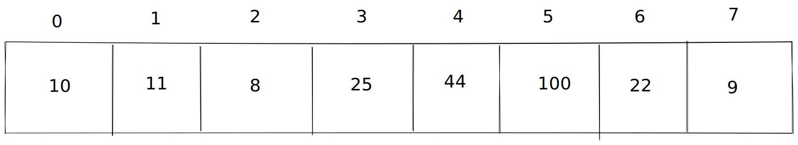

Rust4Noobs

Sobre o Projeto
Projeto para introdução a linguagem de programação Rust, o objetivo deste livro é inserir o leitor aos conceitos da linguagem Rust, como o seu modo de gerenciamento de memória e conceitos da linguagem.
Autores
- Paulo Gabriel Justino Bezerra - Desenvolvedor Java - Linkedin

Básico
Este é o início da nossa caminhada de aprendizado da linguagem de programação Rust, nesta seção você encontrara coisas como configurações de ambiente, tipos, estrutura de decisão, loops e funções.
Roadmap:
- Sobre a linguagem
- Ambiente
- Hello World
- Tipos de dados
- Operadores
- Condicionais
- Loops
- Funções
- Arrays
- Exercícios
Breve resumo sobre a linguagem Rust
Rust é uma linguagem de programação de código aberto, desenvolvida pela Mozilla, seu desenvolvimento iniciou em meados de 2006. No ano de 2010 foi anunciado o Rust 1.0, de lá para cá já aconteceram diversas melhorias e mudanças na linguagem, sua última versão no momento em que este repositório começou a ser escrito é a versão 1.56.1 - Stable.
Rust é rápido, compilado, gerencia a memória de maneira muito eficiente, sem Garbage Collector, sem runtime, é rico em conteúdo e tem uma comunidade gigantesca.
Ambiente
Instalação do Rust
Linux
As distribuições Linux testadas para a instalação de Rust foram:
- Arch Linux
- Fedora
- Ubuntu
Para realizar a instalação da linguagem é necessário ter a ferramenta curl instalada no sistema, para a instalação do curl nas distribuições testadas foram utilizados os seguintes métodos:
Arch Linux:
sudo pacman -S curl
Fedora:
sudo dnf install curl
Ubuntu:
sudo apt install curl
Com a ferramenta curl instalada foi utilizado o método de instalação recomendado no site da linguagem:
curl --proto '=https' --tlsv1.2 -sSf https://sh.rustup.rs | sh
Este comando ira baixar o instalador do Rust e executa-lo no shell, para seguir escolha a opção 1 aperte enter. A instalação seria realizada.
Windows
OBS. Método de instalação utilizando o gerenciador de pacotes do Windows oficial da Microsoft winget.
Para instalar o Rust no Windows execute o seguinte comando em um PowerShell como administrador:
winget install -e --id Rustlang.rust-gnu-x64
Validando instalação
Para validarmos a instalação utilizamos o comando:
cargo --version
Ele deve nos mostrar algo parecido com isso:
cargo 1.56.0 (4ed5d137b 2021-10-04)
E logo em sequência o comando
rustc --version
O comando deve nos retornar algo parecido com isso:
rustc 1.56.0 (09c42c458 2021-10-18)
IDEs
Temos algumas IDE's que podem facilitar a nossa vida no desenvolvimento utilizando Rust
- IntelliJ com o Plugin para Rust
- VSCode com os seguintes plugins:
- CodeLLDB para debug
- rust-analyzer language server é util para lermos a documentação e termos o intellisense enquanto escrevemos códigos
- crates para nos ajudar no gerenciamento de dependência do projeto
Nosso primeiro "Hello World"
Após a instalação de um compilador nada melhor que iniciarmos com o famoso "Hello World!", a instalação da linguagem nos fornece a ferramenta cargo com esta ferramenta conseguimos criar projetos em Rust, gerenciar dependências, rodar testes, rodar a aplicação e dar build na aplicação.
Para criarmos nosso primeiro projeto, iremos utilizar o seguinte comando:
cargo new hello-rust
Este comando ira criar um projeto com a seguinte estrutura:
├── Cargo.toml
└── src
└── main.rs
O arquivo Cargo.toml é o arquivo onde temos as informações sobre o projeto, como nome, versão, autor(es), dependências, opções de build, edição, etc.
Na pasta src temos o código-fonte do nosso projeto, neste caso o como o nosso projeto é de um executável temos o arquivo main.rs, nele esta o início de nossa jornada em códigos Rust.
fn main() { println!("Hello, world!"); }
Temos a palavra reservada fn que é palavra que define uma função, temos o macro println! que é o responsável por escrever no nosso console.
Executando o comando
cargo run
Teremos nosso primeiro código em Rust sendo executado e a mensagem Hello, world! sendo mostrada no nosso console.
Tipos de dados
Rust é uma linguagem fortemente e estaticamente tipada, nela temos alguns tipos
Tipos
| Tipo | Tamanho | Valor Máximo | Valor Mínimo | |
|---|---|---|---|---|
| i8 | 1 byte | 127 | -128 | Numérico |
| u8 | 1 byte | 255 | 0 | Numérico |
| i16 | 2 bytes | 32767 | -32768 | Numérico |
| u16 | 2 bytes | 65535 | 0 | Numérico |
| i32 | 4 bytes | 2147483647 | -2147483648 | Numérico |
| u32 | 4 bytes | 4294967295 | 0 | Numérico |
| i64 | 8 bytes | 9223372036854775807 | -9223372036854775808 | Numérico |
| u64 | 8 bytes | 18446744073709551615 | 0 | Numérico |
| i128 | 16 bytes | 170141183460469231731687303715884105727 | -170141183460469231731687303715884105728 | Numérico |
| u128 | 16 bytes | 340282366920938463463374607431768211455 | 0 | Numérico |
| f32 | 4 bytes | 340282350... | -340282350... | Numérico |
| f64 | 8 bytes | 1797693134862315700... | -1797693134862315700... | Numérico |
| bool | 1 byte | true | false | booleano |
| char | 4 bytes | '\0' | | character |
Temos também o tipo usize que vai dependender da arquitetura do sistema operacional.
Variáveis
Para declararmos "variáveis" em Rust utilizamos a palavra reservada let, mas o uso de apenas essa palavra para a declaração das "variáveis" armazena tipos imutáveis, para termos variáveis que podem ser alteradas temos que utilizar outra palavra reservada mut.
Temos dois modos de declarar variáveis, uma em que falamos o tipo para o compilador e outra que o compilador "decide o tipo" para nós. Para a declaração que informamos o tipo temos a seguinte sintaxe let nome: tipo = valor e para a que o compilador decide temos a sintaxe let nome = valor;
fn main() { let idade_atual: u8 = 22; let ano_nascimento = 1999; //inferencia de tipo println!("Idade atual {}, ano de nascimento: {}", idade_atual, ano_nascimento); }
No exemplo acima utilizamos a declaração do tipo e inferência do mesmo, mas também podemos dar uma dica ao compilador ao tipo que iremos utilizar, o tipo padrão para números inteiros é i32, mas é um disperdicio de alguns bytes, podemos fazer da seguinte maneira.
fn main() { let idade_atual: u8 = 22; let ano_nascimento = 1999_u16; println!("Idade atual {}, ano de nascimento: {}", idade_atual, ano_nascimento); }
Deste modo temos outro jeito de informar ao compilador que tipos queremos utilizar, porém, para este exemplo não faz muito sentido.
fn main() { let crab_power = 100_f32; println!("Poder do carangueijo {}%", crab_power); }
Mas para casos como este, esse tipo de abordagem faz mais sentido.
Operadores
Antes de entrarmos nas estruturas condicionais, precisamos saber os operadores.
Operadores matemáticos
| Tipo | Simbolo | Ação |
|---|---|---|
| Soma | + | Soma dois valores |
| Subtração | - | Subtrai dois valores |
| Multiplicação | * | Multiplica dois valores |
| Divisão | / | Divide dois valores |
| Mod | % | Resto de divisão |
| Soma atribui | += | Soma e atribui o valor |
| Subtrai e atribui | -= | Subtrai e atribui o valor |
| Multiplica e atribui | *= | Multiplica e atribui o valor |
| Divide e atribui | /= | Divide e atribui o valor |
No capítulo sobre os tipos de dados mostramos como declarar variáveis e também sobre o caso do Rust precisar de uma palavra extra para essas variáveis serem modificadas, mas não a utilizamos, neste capítulo iremos utilizar, nos exemplos dos usos dos operadores matemáticos.
fn main() { let mut n = 10 - 1; //n = 9 n = 1 + 2; //n = 3 n = 10 * 2; //n = 20 n = 10 / 2; //n = 5 /* Agora temos o valor de n = a 5, iremos realizar operações de atribuições com base neste valor. */ n += 1; //n = 6 n -= 2; //n = 4 n *= 3; //n = 12 n /= 4; //n = 3 }
Operadores lógicos
| Tipo | Simbolo | Ação |
|---|---|---|
| Igual | == | Compara se dois valores são iguais |
| Diferente | != | Verifica se dois valores são diferentes |
| Maior | > | Verifica se um valor é maior que outro |
| Menor | < | Verifica se um valor é menor que outro |
| Maior igual | >= | Verifica se um valor é maior ou igual a outro |
| Maior igual | <= | Verifica se um valor é menor ou igual a outro |
O uso dos operadores lógicos iremos ver na próxima parte
Condições
Em Rust como em todas as linguagens de programação, ou pelo menos a maioria, temos estruturas de decisões, são bem parecidas, com base em uma condição tomamos uma decisão.
Para utilizar estruturas condicionais em Rust devemos utilizar a palavra reservada if.
fn main() { let a = 20; let b = 10; if a > b { println!("'a' é maior que 'b'"); } }
E se quisermos executar algo caso a condição não seja verdadeira?? Utilizamos a palavra else
fn main() { let a = 10; let b = 20; if a > b { println!("'a' é maior que 'b'"); } else { println!("'b' é maior que 'a'"); } }
Simples né? E se quisermos realizar outra checagem caso a primeira condição não de verdadeira? Simples combinamos o else e o if
fn main() { let a = 10; let b = 20; let c = 15; if a > b { println!("'a' é maior que 'b'"); } else if b > c { println!("'b' é maior que 'a'"); } else { //caso não aconteça nenhum dos casos cai aqui println!("'c' é maior que 'b'"); } }
Loops
Caso queiramos repetir alguma instrução, várias e várias vezes, o que fazemos? Escrevemos o mesmo código inúmeras vezes? Claro que não, para fazermos isso utilizamos loops.
Em Rust temos 3 tipos de loops for, while e loop, todos de fácil utilização, todos com suas peculiaridades, mas no fim utilizamos para a mesma coisa, repetir coisas.
Loop FOR
O loop for, provavelmente é o mais utilizado, não necessariamente do modo que iremos aprender agora, mas isso vem depois, agora iremos focar no básico de sua utilização.
Sua declaração é feita da seguinte maneira for variavel in de..até
fn main() { for i in 0..10 { println!("{}", i); } }
Agora temos um loop for que vai de 0 até 9, pode não ser muito intuitivo logo de início, lendo o código parece que iria ir de 0 até 10, todavia sempre sera valor até - 1
Loop WHILE
O loop while é uma estrutura de repetição que se repete por tempo indeterminado, diferente do loop for ela ira se repetir infinitamente enquanto a condição for verdadeira.
Sua declaração é while condicao
fn main() { let mut i = 0; while i <= 10 { println!("{}", i); i += 1; } }
Agora temos um loop whileque ira repetir enquanto i for menor ou igual a 10, a partir do momento que esta condição não for satisfeita, o loop ira ser encerrado.
Em alguns momentos queremos loops infinitos, o que você faria? Utilizaria um while true? Não é necessário no Rust temos...
Loop "loop"
Quando queremos ter um loop infinito podemos utilizar a palavra reservada loop, esta palavra cria um bloco que se repete infinitamente
fn main() { loop { println!("Rust4Noobs"); } }
Agora temos um bloco que irá escrever "Rust4Noobs" infinitamente.
Palavra break
Nem sempre queremos que um loop execute completamente antes de encerrar, para isso temos a palavra break ela tem a função de parar uma estrutura de repetição. Serve tanto para blocos for, while e loop
fn main() { for i in 1..100 { println!("{}", i); if i % 3 == 0 && i % 9 == 0 { println!("Parou!"); break; } } let mut i = 0; while i <= 100 { println!("{}", i); if i == 10 { println!("Parou!"); break; } i+= 1; } i = 0; loop { println!("{}", i); if i == 10 { println!("Parou!"); break; } i+= 1; } }
Palavra continue
Utilizamos a palavra continue quando queremos pular uma parte do loop, por exemplo. Temos um loop de 0 a 99 onde queremos escrever no console todos os números, exceto os múltiplos de 4 e 6 ao mesmo tempo. Podemos usar um continue para isso.
fn main() { for i in 0..100 { if i % 4 == 0 && i % 6 == 0 { continue; } println!("Numero atual {}", i); } }
Claro isso não se aplica somente ao for, é possível utilizar com while e com loop também
Funções
Em Rust já vimos a função main a função responsável por ser o ponto de partida da nossa aplicação, porém não é muito legal realizarmos todas as operações dentro desta única função, porque além de causar a repetição de código ainda temos um grande problema, ela ficará GIGANTESCA, para resolver este problema podemos criar funções menores, que fazem pequenas coisas.
Funções sem argumento
Temos funções com e sem argumentos, com e sem retorno, agora iremos falar das sem argumentos e com ou sem retorno.
A declaração de uma função em Rust é simples, utilizamos o seguinte padrão fn nome() ou fn nome() -> tipo retorno
#![allow(unused)] fn main() { fn quanto_e_um_mais_dois() -> u8 { 3 } fn escreve_hello_world_dez_vezes() { for i in 0..10 { println!("Hello World!"); } } }
Retorno de funções
Temos dois modos de realizar o retorno de uma função em Rust, um deles é o retorno sendo a última linha do bloco da função sem a palavra return e sem o ; o segundo modo é utilizarmos a palavra return propriamente dita.
#![allow(unused)] fn main() { fn retorno_implicito() -> bool { true } fn retorno_explicito() -> u8 { if 10 > 1 { return 200; //a palavra return encerra a função e retorna o valor } 1 //retorno implicito na mesma função } }
Funções com parâmetros
Temos também podemos passar argumentos nas funções, para isso utilizamos o seguinte padrão de assinatura fn nome_funcao(parametros com seus tipos) ou fn nome_funcao(parametros com seus tipos) -> tipo retorno.
Por exemplo, precisamos de um programa que faça o cálculo de impostos para uma nota fiscal e no fim deste cálculo nos exiba no console o valor destes impostos.
O modo mais ingenuo de fazer isso com o que aprendemos até agora seria da seguinte maneira:
fn main() { let valor = 100.0; let icms = valor * 0.01; let iss = valor * 0.10; println!("Icms: {}", icms); println!("Iss: {}", iss); }
Porém, temos um problema aí, e se eu quiser calcular vários valores diferentes, eu iria repetir este o bloco do cálculo? Não, eu posso extrair este calculo para uma função, a mesma coisa para exibir no console. Ficando da seguinte maneira:
fn main() { let valor = 100.0; let icms = calcula_icms(valor); let iss = calcula_iss(valor); escreve_icms(icms); escreve_iss(iss); } fn calcula_icms(valor: f32) -> f32 { valor * 0.01 } fn calcula_iss(valor: f32) -> f32 { valor * 0.10 } fn escreve_icms(icms: f32) { println!("Icms: {}", icms); } fn escreve_iss(iss: f32) { println!("Iss: {}", iss); }
A primeira instância parece apenas que escrevemos mais, porém com os nomes expressivos conseguimos saber exatamente o que esta acontecendo e podemos chamar estes blocos de códigos de diversos lugares.
As funções são algo muito útil, mas em Rust temos que ter um certo cuidado com elas, mas este cuidado iremos ver na parte intermediaria deste 4Noobs.
Arrays
Arrays
Chegou o momento daquele assunto que é um dos terrores para quem esta começando a programar, os arrays.
Array é uma estrutura de dados sequêncial que armazena o mesmo tipo de dados, seriam como uma sequência de células de memória indexadas. Geralmente iniciamos sua contagem a partir do número 0.

Em Rust declaramos arrays da seguinte maneira let nome: [tipo; tamanho] = [valor; tamanho], Rust nos obriga a inicializar o array, então faremos da seguinte maneira.
fn main() { let array: [u8; 7] = [0; 7]; }
Deste modo temos um array de 7 posições preenchido com o valor 0, para acessarmos valores específicos dentro do array utilizamos os colchetes [posicao], para modificarmos qualquer valor dentro do array também precisamos do uso da palavra mut.
Em um array temos o método len onde conseguimos saber o tamanho do array, este método é muito util para realizar um loop for para percorrer o array.
Iremos realizar uma simples operação com um array, teremos um array de 10 posições e iremos percorrer esse array e daremos o valor para cada posição com a seguinte regra: posição + 10, e logo depois iremos imprimir no console este array.
fn main() { let mut array: [u8; 10] = [0; 10]; for i in 0..array.len() { array[i] = i as u8 + 10u8; } for i in 0..array.len() { println!("Pos: {}, val: {}", i, array[i]); } }
O uso da palavra as será discutido depois, após a execução do código acima temos o resultado:
Pos: 0, val: 10
Pos: 1, val: 11
Pos: 2, val: 12
Pos: 3, val: 13
Pos: 4, val: 14
Pos: 5, val: 15
Pos: 6, val: 16
Pos: 7, val: 17
Pos: 8, val: 18
Pos: 9, val: 19
Também temos outro modo de executar este loop para realizar o print dos valores:
fn main() { let mut array: [u8; 10] = [0; 10]; for i in 0..array.len() { array[i] = i as u8 + 10u8; } for val in array { println!("Val: {}", val); } }
Do modo em que fizemos perdemos a informação do índice que estamos percorrendo, mas temos o seguinte resultado:
Val: 10
Val: 11
Val: 12
Val: 13
Val: 14
Val: 15
Val: 16
Val: 17
Val: 18
Val: 19
Para termos o índice de volta podemos fazer da seguinte maneira:
fn main() { let mut array: [u8; 10] = [0; 10]; for i in 0..array.len() { array[i] = i as u8 + 10u8; } for (i, val) in array.iter().enumerate() { println!("pos: {}, val: {}", i, val); } }
Assim temos a saída:
pos: 0, val: 10
pos: 1, val: 11
pos: 2, val: 12
pos: 3, val: 13
pos: 4, val: 14
pos: 5, val: 15
pos: 6, val: 16
pos: 7, val: 17
pos: 8, val: 18
pos: 9, val: 19
Exercícios
Nada melhor que exercícios para praticar o que aprendemos até agora, loops, arrays, operadores, tipos de dados e funções.
1 - Faça um programa que tenha uma função que recebe um array de inteiros com sinal (aceite números negativos) e devolva a soma dos valores deste array e exiba no console.
2 - Faça um programa que calcule a média entre quatro notas e informe se foi aprovado ou não e a média, para ser aprovado a média deve ser maior ou igual a 7.
3 - Faça um programa que percorra um vetor com valores inteiros e verifique quais múltiplos de 2.
Módulo intermediário 1
Decidi dividir o módulo intermediário em dois, esta parte do módulo intermediário iremos falar sobre as strings, introdução aos ponteiros, sistema de ownership, tuplas, tipos slice, parse e casting.
Roadmap:
Strings
Lembra dos Arrays? String são arrays, porém de um tipo específico char, existem varias formas de representar strings em Rust, nesta parte do 4Noobs, iremos utilizar um modo específico com o tipo String.
Para declararmos uma String utilizamos o seguinte padrão let nome: String = String::from(texto entre aspas).
fn main() { let texto = String::from("Hello World!"); }
Acima temos a declaração da nossa String, nela temos alguns métodos, mas nesta parte iremos falar sobre os seguintes métodos len, push, push_str, trim.
Sendo os métodos push e push_str específicos para Strings mutáveis.
String len
O método len nos retorna o tamanho da String, seu modo de uso é bem simples, apenas colocamos um .len().
fn main() { let texto = String::from("Rust4Noobs"); let tamanho_texto = texto.len(); println!("O tamanho do texto é: {}", tamanho_texto); }
String push e push_str
Com o método push, conseguimos adicionar um caractere a nossa String e com o push_str conseguimos adicionar outra String.
fn main() { let mut texto = String::from("Rust"); texto.push('4'); texto.push_str("Noobs"); println!("{}", texto); }
String trim
O método trim remove os espaços do início e no fim de uma String, porém não modifica o texto original, ele nos retorna outra String sem estes espaços. O método é bem útil para quando formos realizar algum tipo conversão, mas iremos falar sobre isso posteriormente, por enquanto iremos focar apenas neste método.
fn main() { let texto = String::from(" Rust4Noobs "); println!("Sem trim: {} Com o uso de trim: {}", texto, texto.trim()); println!("A string original se mantém: {}", texto); }
Não cobrimos alguns pontos importantes sobre este tipo de dado, por conta de alguns conceitos ainda não explicado, futuramente iremos retomar com as Strings.
Introdução a Ponteiros
Afinal, o que são ponteiros? Ponteiros seriam como váriaveis, porém elas armazenam outro tipo de informação, o endereço de memória de outro dado.
Fazendo uma analogia com o mundo real, a sua casa seria uma variável do tipo Casa, você consegue realizar ações e modifica-la como você deseja desde que não, afete a integridade de sua moradia, mas você tem um conhecido que também pode modificar sua casa, porém ele não mora nela e tem o seu endereço, ele sabe como chegar a sua casa para fazer esta modificação, este seria um ponteiro.
Ta não foi um bom exemplo, mas creio que fique mais fácil de entender com um desenho.

Resumidamente os ponteiros simplismente dizem "olha eu sei onde você mora, fica esperto!" "Eu conheço o endereço daquele cara ali".
Ponteiros em Rust
Lembra que acabamos de ver as strings, o tipo String é de certa forma um ponteiro, ele aponta para um endereço de memória localizado no heap, é um "tipo especial" de ponteiro, mas agora iremos utilizar exemplos mais fáceis de manipular.
referência em Rust
Para representarmos ponteiros em Rust utilizamos o caractere &.
fn main() { let a: u8 = 10; let b: &u8 = &a; println!("Valor de a: {}\nvalor de a a partir de b:{}", a, b) }
No exemplo acima a variável 'b' faz referência a variável 'a' do tipo u8.
Podemos também ter referências mutáveis, porém existem duas regras, a primeira é a variável referênciada também deve ser mutável, assim podemos alterar o valor de uma variável a partir de outra que a referência, mas para isso realizamos uma "desreferênciação" com o caractere *
fn main() { let mut a: u8 = 10; let b: &mut u8 = &mut a; *b = 20u8; println!("Valor de a: {}", a); }
A outra regra é, só podemos ter uma única referência mutável para a variável:
fn main() { let mut a: u8 = 10; let b: &mut u8 = &mut a; let _c: &mut u8 = &mut a; *b = 20u8; println!("Valor de a: {}", a); }
Ao tentar compilar o código acima temos o seguinte erro:
error[E0499]: cannot borrow `a` as mutable more than once at a time
--> main.rs:4:23
|
3 | let b: &mut u8 = &mut a;
| ------ first mutable borrow occurs here
4 | let _c: &mut u8 = &mut a;
| ^^^^^^ second mutable borrow occurs here
5 | *b = 20u8;
| --------- first borrow later used here
error: aborting due to previous error
Com isso entramos no sistema de ownership do Rust, que daremos continuidade na próxima parte desse 4Noobs.
Ownership
Ownership é o método que Rust usa para o seu gerenciamento de memória, basicamente enquanto algum escopo do código tem aquele pedaço de memória ele é da nossa aplicação, quando esse pedaço de memória sai deste escopo ela é devolvida para o Sistema Operacional.
Vamos entender um pouco melhor como funciona o escopo de uma variável.
fn main() { let a = 10; if a == 10 { let b = 1; /* Neste ponto do código as variáveis 'a' e 'b' existem */ } /* a partir deste ponto não é possível acessar a variável 'b', pois ela esta fora de escopo */ println!("Valor de b {}", b); }
Ao tentar compilar o código acima temos o seguinte erro:
error[E0425]: cannot find value `b` in this scope
--> main.rs:14:31
|
14 | println!("Valor de b {}", b);
| ^ help: a local variable with a similar name exists: `a`
error: aborting due to previous error
Neste caso 'b' pertence a um escopo menor do que 'a', a partir do momento que sai do bloco if a variável 'b' desaparece.
E como isso funciona no sistema de ownership? Para explicar isso iremos utilizar o tipo que aprendemos no começo deste módulo, as Strings.
fn main() { let mut meu_texto = String::from("Rust4Noobs"); printa_string(meu_texto); /* Vamos tentar fazer outra coisa com essa String */ meu_texto.push_str(", é legal!"); } fn printa_string(string: String) { println!("{}", string); }
Espera... Não compila, temos o seguinte erro:
error[E0382]: borrow of moved value: `meu_texto`
--> main.rs:7:5
|
2 | let mut meu_texto = String::from("Rust4Noobs");
| ------------- move occurs because `meu_texto` has type `String`, which does not implement the `Copy` trait
3 | printa_string(meu_texto);
| --------- value moved here
...
7 | meu_texto.push_str(", é legal!");
| ^^^^^^^^^ value borrowed here after move
error: aborting due to previous error
For more information about this error, try `rustc --explain E0382`.
Vamos entender o que aconteceu aqui.
O tipo String é um "tipo especial", ele sempre é passado por referência, nunca é feito uma cópia de seu valor, quando chamamos a função printa_string e em seu parâmetro passamos nossa String, a posse de sua memória é transferida para a função, quando a função termina a memória é devolvida para o Sistema Operacional.
fn main() { let mut meu_texto = String::from("Rust4Noobs"); printa_string(meu_texto); /* Vamos tentar fazer outra coisa com essa String */ meu_texto.push_str(", é legal!"); } fn printa_string(string: String) { println!("{}", string); } //a partir daqui a memória foi devolvida para o sistema
Mas se ainda quisermos utilizar a variável meu_texto? Podemos fazer a função printa_string retornar a String passada por argumento e pegar o ownership de volta.
fn main() { let mut meu_texto = String::from("Rust4Noobs"); meu_texto = printa_string(meu_texto); meu_texto.push_str(", é legal!"); println!("{}", meu_texto); } fn printa_string(string: String) -> String { println!("{}", string); string }
Agora o código ira compilar, todavia esta não é a única maneira de fazer isso, lembra dos ponteiros? Vamos utilizar aqui.
fn main() { let mut meu_texto = String::from("Rust4Noobs"); printa_string(&meu_texto); meu_texto.push_str(", é legal!"); println!("{}", meu_texto); } fn printa_string(string: &String) { println!("{}", string); }
E também funcionou, por enquanto vamos tentar pensar da seguinte maneira, como eu utilizei o ponteiro, eu emprestei a esta função a variável, ela fez o que tinha que fazer e me devolveu. Não perdemos o ownership da variável.
Utilizando esta estratégia de passagem por referência conseguimos utilizar algumas outras coisas como as referências mutáveis, modificar o valor sem perder o ownership
fn main() { let mut meu_texto = String::from("Rust4Noobs"); printa_string(&meu_texto); adiciona_texto(&mut meu_texto); println!("{}", meu_texto); } fn printa_string(string: &String) { println!("{}", string); } fn adiciona_texto(string: &mut String) { string.push_str(", é legal!"); }
E temos sucesso novamente.
Tuplas
Aprendemos sobre arrays no módulo básico, agora iremos falar sobre as tuplas.
Tuplas é uma "coleção" de dados de tipos diferentes, em uma tupla podemos ter um u8, uma String, um char... Todos juntos, sua declaração é feita da seguinte maneira let tuple: (tipo1, tipo2, tipo3...) = (valor1, valor2, valor3...).
fn main() { let tuple: (u8, i32, String, char) = (10, 25, String::from("Rust4noobs"), 'a'); println!("{:?}", tuple); }
E agora, ainda utilizando o exemplo acima, como eu faço para acessar o valor i32 da tupla? Ou seja, o segundo item. Assim como no array começamos a contagem por 0 nas tuplas também fazemos isso, porém ao invés de utilizarmos os colchetes para acessar, utilizamos o .0
fn main() { //0, 1, , 2 , 3 let tuple: (u8, i32, String, char) = (10, 25, String::from("Rust4Noobs"), 'a'); println!("Valor i32: {}", tuple.1); }
Acessamos o valor i32 e escrevemos ele na saída principal.
Na parte sobre ownership utilizamos da estratégia de retornar o que foi passado por parâmetro para não perdemos a posse de memória da variável, podemos fazer isso com tuplas também.
fn main() { let texto1 = String::from("Rust"); let texto2 = String::from("4Noobs"); let (mut devolve1, mut devolve2) = printa_duas_strings(texto1, texto2); devolve1.push_str(" qualquercoisasópraterexemplo"); devolve2.push_str(" sérionaotiveideianenhuma"); println!("{}", devolve1); println!("{}", devolve2); } fn printa_duas_strings(texto1: String, texto2: String) -> (String, String) { println!("{}", texto1); println!("{}", texto2); (texto1, texto2) }
Conseguimos utilizar a mesma estratégia de retornar os parâmetros para não perder o ownership com uma tupla.
Slices
Nesta parte do 4Noobs, iremos falar sobre os Slices e para isso iremos utilizar String sim, ainda falando sobre esse tipo zZzzzZZZ, claro não é algo exclusivo de String, é apenas um pedaço de algo literalmente, mas como já falamos sobre este cara, vamos usar ele mesmo. Não eu não estou com preguiça.
Temos o seguinte trecho de código:
fn main() { let texto: String = String::from("Rust 4 Noobs"); }
A partir da String acima, eu quero pegar os 4 primeiros caracteres desta String, como faríamos isso? Utilizaríamos um slice, e com isso vamos ver outro modo de representar uma String.
fn main() { let texto: String = String::from("Rust 4 Noobs"); let slice = quatro_primeiros(&texto); println!("{}", slice); } fn quatro_primeiros(texto: &String) -> &str { &texto[0..4] }
Para criar um slice utilizamos os colchetes, e dentro dos colchetes informamos o valor de e o valor até, deste modo criamos um slice da nossa String. Vamos entrar com outro exemplo agora, vamos achar o primeiro espaço e retornar a primeira palavra, com algumas coisas que já vimos até aqui:
fn main() { let texto: String = String::from("Rust 4 Noobs"); let slice = primeira_palavra(&texto); println!("{}", slice); } fn primeira_palavra(texto: &String) -> &str { let bytes = texto.as_bytes(); for (i, &item) in bytes.iter().enumerate() { if item == b' ' { //b' ' transforma o espaço em um byte return &texto[0..i] } } &texto[..] //caso não ache retorna a string inteira como um slice }
referência "ausente"
Sendo sincero não encontrei um modo melhor de traduzir "dangling reference", mas ela ocorre quando tentamos retornar uma referência de algo que já foi devolvido ao Sistema Operacional. Vamos utilizar o nosso primeiro exemplo para demonstrar, vamos remover a passagem por referência da nossa função, pegar o ownership e tentar devolver o slice
fn main() { let texto: String = String::from("Rust 4 Noobs"); let slice = quatro_primeiros(&texto); println!("{}", slice); } fn quatro_primeiros(texto: String) -> &str { &texto[0..4] }
Ao tentar compilar o código acima, tentamos devolver um pedaço da String que foi passada como parâmetro, porém quando esta função sai do escopo devolvemos a memória para o Sistema Operacional, então o slice iria apontar para nada, lembra que Rust é memory safe? Então, o compilador não deixa compilar nos devolvendo o seguinte erro
error[E0106]: missing lifetime specifier
--> main.rs:7:39
|
7 | fn quatro_primeiros(texto: String) -> &str {
| ^ expected named lifetime parameter
|
= help: this function's return type contains a borrowed value with an elided lifetime, but the lifetime cannot be derived from the arguments
help: consider using the `'static` lifetime
|
7 | fn quatro_primeiros(texto: String) -> &'static str {
| ~~~~~~~~
error: aborting due to previous error
Entrada de dados
Agora que conhecemos as Strings, sabemos sobre os ponteiros, sistema de ownership podemos falar sobre a entrada de dados pelo terminal em nossa aplicação. Isso não foi passado antes, pois precisávamos entender alguns conceitos antes de utilizarmos o input de dados.
Para aceitarmos os dados a partir do console, usamos o seguinte código
fn main() { let mut string = String::new(); println!("Entre com o seu texto: "); std::io::stdin().read_line(&mut string).unwrap(); println!("Voce digitou {}", string); }
Da biblioteca padrão do Rust utilizamos o stdin, ou seja, a entrada padrão de dados, precisamos de um buffer, neste caso utilizamos uma String mutável e vazia, para isso utilizamos o método new e passamos esse buffer como uma referência mutável para o método read_line, o método unwrap ira fazer a nossa aplicação parar caso a leitura da entrada padrão falhe.
Parse
Agora que sabemos como ler uma entrada do usuário, vamos aprender como transformar este texto em um tipo inteiro, por exemplo.
fn main() { let mut string = String::new(); println!("Entre com um número: "); std::io::stdin().read_line(&mut string).unwrap(); let numero = string.trim().parse::<i32>().unwrap(); if numero >= 10 { println!("Seu número é maior ou igual a 10"); } else { println!("Seu número é menor que 10"); } }
Lembra do método trim sem ele não iramos conseguir fazer esta conversão. O método parse é o responsável por converter de um texto para um tipo inteiro, ou um tipo com ponto flutuante. O tipo entre o sinal de menor e maior é o tipo que iremos fazer o parse.
Não iremos nos aprofundar tanto neste ponto, mostrando exemplos com todos os tipos de numéricos, mas iremos demonstrar essa conversão com uma inferência de tipo.
fn main() { let mut string = String::new(); println!("Entre com um número: "); std::io::stdin().read_line(&mut string).unwrap(); let numero = string.trim().parse().unwrap(); numero_maior_igual_a_dez(numero); } fn numero_maior_igual_a_dez(numero: i32) { if numero >= 10 { println!("Seu número é maior ou igual a 10"); } else { println!("Seu número é menor que 10"); } }
O compilador do Rust é inteligente o suficiente para saber que estamos fazendo um parse para o tipo i32, por estarmos chamando a função numero_maior_igual_a_dez que recebe um i32 por parâmetro, e este parâmetro é a variável que ira receber o valor do parse.
Casting
Se lembra da parte sobre arrays quando utilizamos o seguinte trecho de código
#![allow(unused)] fn main() { ... let mut array: [u8; 7] = [0; 7]; for i in 0..array.len() { array[i] = i as u8 + 10u8; } ... }
Aquela palavra as foi a responsável em transformar um tipo usize em um tipo u8, chamamos este tipo de operação de casting, nem sempre este tipo de operação funciona, como nosso exemplo era um número bem pequeno conseguimos converter para um tipo u8, mas se o valor fosse maior que 255 esta conversão iria falhar, pois ocupara mais do que 1 byte. Então tome cuidado ao utilizar este tipo de operação, exemplo de código que ira falhar, nos dando um resultado não esperado.
fn main() { let a: usize = 10000; let b: u8 = a as u8; println!("Valor convertido: {}", b); }
Lembrando este exemplo é apenas para tipos primitivos, futuramente iremos aprender outros tipos e iremos ver que nem sempre é possível realizar esta operação.
Exercícios
Esta na hora de praticar com base no que vimos neste módulo.
1 - Faça um programa que receba um número de no máximo 255 como entrada do usuário e informe em qual grau o numero esta encaixado, conforme as especificações:
- 1° grau entre 0 e 50
- 2° grau entre 51 e 120
- 3° grau entre 121 e 200
- 4° grau acima de 200
2 - Faça um programa que tenha a String "Rust4Noobs" e receba do usuário outra String que sera adicionada a String já existente. E escreva no console.
Intermediario 2
Vamos a segunda parte do módulo intermediario, o módulo foi divido em duas partes por conta do conteúdo do Intermediario 1 não ser tão basico e nem tão "intermediario", nesta parte iremos falar sobre: struct, enum, match, traits, Option, Result, "if let", generics e algumas colecoes
Roadmap:
- Struct
- Enum
- Match
- Modulos
- Generics
- Traits
- Enum especial Option
- Coleções: Vec
- Coleções: HashSet
- Coleções: HashMap
- Tratamento de erros
- Macro panic!
- Testes
- Mini projeto - Snake Game
Structs
Struct no modo mais simples de se falar é uma estrutura de valores em "uma única variável". Não consigo pensar em um modo mais fácil de explicar com palavras o que seria uma "struct", sua declaração é simples ela segue o seguinte padrão struct Nome { campos }.
#![allow(unused)] fn main() { struct Cliente { nome: String, ano_de_nascimento: u16, documento: String, } }
O modo de declaração dos campos/atributos de uma struct lembra bastante o de um json, para criarmos uma variável de uma struct podemos fazer da seguinte maneira:
//--declaração da estrutura Cliente fn main() { let cliente: Cliente = Cliente { nome: String::from("Paulo"), ano_de_nascimento: 1999, documento: String::from("Onde?") }; }
Podemos acessar os campos da variável utilizando apenas um ".nome_do_campo".
//--declaração da estrutura Cliente fn main() { let cliente = Cliente { nome: String::from("Paulo"), ano_de_nascimento: 1999, documento: String::from("Onde?") }; println!("Nome do cliente: {}", cliente.nome); }
Declarando comportamento para uma Struct
Em Rust uma struct pode ter funções associadas a ela, essas funções são chamadas de métodos, aqui temos uma das características de Programação Orientada a Objetos no Rust, como a linguagem é de multi-paradigmas temos alguns recursos desse modo de programação disponível.
Para implementarmos métodos para a struct Cliente utilizamos a palavra reservada impl seguida do nome da estrutura impl Cliente { implementações }, vamos começar com a implementação de um método estático para nos auxiliar na criação de variáveis do tipo Cliente.
struct Cliente { nome: String, ano_de_nascimento: u16, documento: String, } impl Cliente { fn new(nome: String, ano_de_nascimento: u16, documento: String) -> Self { Self { nome: nome, ano_de_nascimento, /* Como o atributo tem o mesmo nome do parâmetro/variável eu não preciso colocar o padrão chave:valor */ documento } } } fn main() { let cliente = Cliente::new(String::from("Paulo"), 1999, String::from("Onde?")); println!("Nome do cliente: {}", cliente.nome); }
A palavra Self com 'S' maiúsculo é um modo de falar que estamos se referindo a própria struct que esta sendo implementada.
Temos também métodos que dependem de uma instância da struct, para este tipo de métodos utilizamos a própria struct utilizando a palavra self com 's' minúsculo como parâmetro do método, pode ser uma referência mutável, imutável ou pode não ser referência, porém, não sendo uma referência perdemos o ownership da struct e sua memória é liberada.
struct Cliente { nome: String, ano_de_nascimento: u16, documento: String, } impl Cliente { fn new(nome: String, ano_de_nascimento: u16, documento: String) -> Self { Self { nome: nome, ano_de_nascimento, /* Como o atributo tem o mesmo nome do parâmetro/variável eu não preciso colocar o padrão chave:valor */ documento } } fn diz_oi(&self) { println!("{} disse oi", self.nome); } fn diz_tchau(self) { println!("{} disse tchau e foi embora", self.nome); } fn mudar_nome(&mut self, novo_nome: String) { //para utilizar este método a instância de //cliente deve ser mutável self.nome = novo_nome; } } fn main() { let mut cliente = Cliente::new(String::from("Paulo"), 1999, String::from("Onde?")); cliente.diz_oi(); cliente.mudar_nome(String::from("Novo nome")); cliente.diz_oi(); cliente.diz_tchau(); //a partir daqui a memória deste //cliente foi liberada não conseguimos mais utilizar }
Caso tentarmos utilizar a instância de cliente após a chamada do método diz_tchau teremos o seguinte erro
--> main.rs:42:5
|
37 | let mut cliente = Cliente::new(String::from("Paulo"), 1999, String::from("Onde?"));
| ----------- move occurs because `cliente` has type `Cliente`, which does not implement the `Copy` trait
...
41 | cliente.diz_tchau(); //a partir daqui a memória deste
| ----------- `cliente` moved due to this method call
42 | cliente.diz_oi(); //cliente foi liberada não conseguimos mais utilizar
| ^^^^^^^ value borrowed here after move
|
note: this function takes ownership of the receiver `self`, which moves `cliente`
--> main.rs:25:18
|
25 | fn diz_tchau(self) {
| ^^^^
error: aborting due to previous error
For more information about this error, try `rustc --explain E0382`.
Enum
Afinal para que serve um enum?
Um enum é uma forma de declarar constantes, de forma mais semântica, sua declaração é feita da seguinte maneira enum Nome { valores }.
#![allow(unused)] fn main() { enum Uf { Sp, Rj, Ce, } }
Os enums em Rust, podem também armazenar valores de forma parecida com uma tupla, mas o modo de recuperar o valor sera mais explicado com mais detalhes na próxima parte.
#![allow(unused)] fn main() { enum Uf { Sp(String), Rj(String), Ce(String), } }
Por enquanto vamos fazer a seguinte alteração neste enum para conseguirmos escrever no console o valor do Enum
#![allow(unused)] fn main() { #[derive(Debug)] enum Uf { Sp(String), Rj(String), Ce(String), } }
Esta alteração que fizemos também pode ser aplicada as structs, para tirarmos proveito desta modificação iremos usar o macro println! da seguinte maneira.
//--declaração do enum fn main() { let uf = Uf::Sp(String::from("São Paulo")); println!("{:?}", uf); println!("{:#?}", uf); }
Este modo de uso ira escrever no console o modo em que a estrutura foi declarada, tanto para os enums quanto para as structs.
Métodos em enums.
Também conseguimos implementar métodos para nossos enums, do mesmo modo que fazemos com as structs.
//--Declaração do enum impl Uf { fn retorna_sp() -> Self { Self::Sp(String::from("São Paulo")) } fn quem_sou_eu(&self) { todo!() } } fn main() { let uf = Uf::retorna_sp(); println!("{:?}", uf); println!("{:#?}", uf); }
Na implementação acima temos o método retorna_sp que ira retornar um enum já com o valor preenchido, e temos também o método quem_sou_eu que iremos implementar na próxima parte deste 4Noobs.
Match
Em Rust não temos a estrutura de decisão switch, em seu lugar temos a expressão match, o seu comportamento é parecido, porém, com alguns recursos a mais. Vamos retomar aquele código dos enums.
#[derive(Debug)] enum Uf { Sp(String), Rj(String), Ce(String), } impl Uf { fn retorna_sp() -> Self { Self::Sp(String::from("São Paulo")) } fn quem_sou_eu(&self) { todo!() } } fn main() { let uf = Uf::retorna_sp(); println!("{:?}", uf); println!("{:#?}", uf); }
Ficamos de implementar o método quem_sou_eu de propósito, nele iremos utilizar a estrutura de decisão match.
//--declaração do enum impl Uf { //--outros métodos fn quem_sou_eu(&self) { match self { Sp(_) => println!("Eu sou São Paulo"), } } } fn main() { let uf = Uf::retorna_sp(); uf.quem_sou_eu(); }
Caso tentarmos compilar o código, teremos o seguinte erro:
error[E0004]: non-exhaustive patterns: `&Rj(_)` and `&Ce(_)` not covered
--> main.rs:14:15
|
2 | / enum Uf {
3 | | Sp(String),
4 | | Rj(String),
| | -- not covered
5 | | Ce(String),
| | -- not covered
6 | | }
| |_- `Uf` defined here
...
14 | match self {
| ^^^^ patterns `&Rj(_)` and `&Ce(_)` not covered
|
= help: ensure that all possible cases are being handled, possibly by adding wildcards or more match arms
= note: the matched value is of type `&Uf`
error: aborting due to previous error
For more information about this error, try `rustc --explain E0004`.
O porquê deste erro?
Rust nos obriga a cobrir todos os casos que podem acontecer. Para isso vamos fazer a seguinte alteração.
//--declaração do enum impl Uf { //--outros métodos fn quem_sou_eu(&self) { match self { Uf::Sp(_) => println!("Eu sou São Paulo"), Uf::Rj(_) => println!("Eu sou Rio de Janeiro"), Uf::Ce(_) => println!("Eu sou Ceará"), } } } fn main() { let uf = Uf::retorna_sp(); uf.quem_sou_eu(); }
Agora nosso código ira rodar, mas reparem que eu posso criar uma instância de enum com um valor e o código se repete nos 3 casos. Eu posso melhorar isso um pouco, realizando a troca do '_' por um nome, e também posso deixar todos no mesmo 'match' utilizando um pipe '|'.
//--declaração do enum impl Uf { //--outros métodos fn quem_sou_eu(&self) { match self { Uf::Sp(nome) | Uf::Rj(nome) | Uf::Ce(nome) => println!("Eu sou {}", nome), } } } fn main() { let uf = Uf::retorna_sp(); uf.quem_sou_eu(); }
E temos o mesmo resultado. Porém se tivermos várias e várias opções e eu não precisar capturar os valores e terem a mesma tratativa. Porém, caso quisermos utilizar o mesmo modo acima e tivermos enum com quantidade de valores diferentes ou incompatíveis precisamos ignorar todos os valores não correspondentes para isso usamos o '_'.
enum Repositorio { Este(String, u16), Outros(String, u16, u8), } fn main() { let url_rust4noobs = String::from("https://github.com/pgjbz/rust4noobs"); let qtd_stars_atuais_rust4noobs: u16 = 22; let url_4noobs = String::from("https://github.com/he4rt/4noobs"); let qtd_stars_atuais_4noobs: u16 = 1964; let qualquer_numero_so_para_diferenciar: u8 = 20; let rust4noobs = Repositorio::Este(url_rust4noobs, qtd_stars_atuais_rust4noobs); let _4noobs = Repositorio::Outros(url_4noobs, qtd_stars_atuais_4noobs, qualquer_numero_so_para_diferenciar); match rust4noobs { Repositorio::Este(url, stars) | Repositorio::Outros(url, stars, _) => println!("Repositorio {}, estrelas {}", url, stars), } }
Claro podemos quebrar em mais 'match' para não perder essas informações.
enum Repositorio { Este(String, u16), Outros(String, u16, u8), } fn main() { let url_rust4noobs = String::from("https://github.com/pgjbz/rust4noobs"); let qtd_stars_atuais_rust4noobs: u16 = 22; let url_4noobs = String::from("https://github.com/he4rt/4noobs"); let qtd_stars_atuais_4noobs: u16 = 1964; let qualquer_numero_so_para_diferenciar: u8 = 20; let rust4noobs = Repositorio::Este(url_rust4noobs, qtd_stars_atuais_rust4noobs); let _4noobs = Repositorio::Outros(url_4noobs, qtd_stars_atuais_4noobs, qualquer_numero_so_para_diferenciar); match rust4noobs { Repositorio::Este(url, stars) => println!("Repositorio {}, estrelas {}", url, stars), Repositorio::Outros(url, stars, n) => println!("Repositorio {}, estrelas {}, numero aleatório para diferenciar {}", url, stars, n), } }
E se eu tenho, por exemplo um u8 eu preciso realizar um 'match' para cada possibilidade? Não eu posso fazer um 'match' com o '' novamente, seria como o 'default' do switch, mas lembre-se quando usamos o '' ignoramos o valor.
fn main() { let numero: u8 = 10; match numero { 1 => println!("Um"), 2 => println!("Dois"), 3 => println!("Três"), _ => println!("Qualquer outro numero") } }
Com o código acima cobrimos todas as possibilidades possíveis e qualquer valor que não seja 1, 2 ou 3 teremos a mesma tratativa.
A expressão match também pode ser utilizada comparar por uma faixa de valor. Utilizando a o 'match' da seguinte maneira 'inicio..=fim'
fn main() { let numero = 20; match numero { 0..=9 => println!("Menor que 10"), _ => println!("Igual ou maior que 10") } }
Ou podemos também utilizar o match para retornar algum valor de qualquer tipo. Mas todos os pontos de retornos tem que ser do mesmo tipo, ou algum tipo de expressão como continue, return, vamos usar o mesmo exemplo anterior, contudo retornando um boolean e armazenando em uma variável.
fn main() { let numero = 20; let menor_que_10 = match numero { 0..=9 => true, _ => false }; if menor_que_10 { println!("Menor que 10"); } else { println!("Igual ou maior que 10"); } }
Match é uma estrutura bem poderosa, e seu uso é relativamente simples por enquanto
Módulos
Os módulos são a forma em que o Rust tem para organizar o código, eles podem ser feitos no mesmo arquivo, em arquivos diferentes, ou em até subdiretórios do projeto.
Vamos pegar aquele primeiro exemplo utilizado nas structs e colocar ele dentro de um módulo, para declarar um módulo fazemos da seguinte maneira mod NomeDoModulo { conteúdo }.
mod nota_fiscal { struct Cliente { nome: String, ano_de_nascimento: u16, documento: String, } impl Cliente { fn new(nome: String, ano_de_nascimento: u16, documento: String) -> Self { Self { nome, ano_de_nascimento, documento } } } } fn main() { let cliente = Cliente::new(String::from("Paulo"), 1999, String::from("Onde?")); }
Separamos a struct Cliente em outro módulo, agora vamos tentar compilar este código... Espera temos um erro.
error[E0433]: failed to resolve: use of undeclared type `Cliente`
--> src/main.rs:20:23
|
20 | let mut cliente = Cliente::new(String::from("Paulo"), 1999, String::from("Onde?"));
| ^^^^^^^ not found in this scope
|
help: consider importing this struct
|
1 | use crate::nota_fiscal::Cliente;
|
For more information about this error, try `rustc --explain E0433`.
error: could not compile `modulos` due to previous error
A struct não foi encontrada no escopo. O compilador esta dizendo para importamos o cliente, vamos importar utilizando o que o compilador diz para importar use crate::nota_fiscal::Cliente;
//--declaração do modulo use crate::nota_fiscal::Cliente; use crate::nota_fiscal::Cliente; fn main() { let cliente = Cliente::new(String::from("Paulo"), 1999, String::from("Onde?")); }
E compilamos... Outro erro.
error[E0603]: struct `Cliente` is private
--> src/main.rs:19:24
|
19 | use crate::nota_fiscal::Cliente;
| ^^^^^^^ private struct
|
note: the struct `Cliente` is defined here
--> src/main.rs:2:5
|
2 | struct Cliente {
| ^^^^^^^^^^^^^^
For more information about this error, try `rustc --explain E0603`.
error: could not compile `modulos` due to previous error
Por padrão todas as declarações dentro de um módulo são privadas, para resolvermos este problema utilizamos a palavra pub, vamos adicionar isso tanto para a struct quanto para a implementação do método estático new, porque ele também é privado.
#![allow(unused)] fn main() { mod nota_fiscal { pub struct Cliente { nome: String, ano_de_nascimento: u16, documento: String, } impl Cliente { pub fn new(nome: String, ano_de_nascimento: u16, documento: String) -> Self { Self { nome, ano_de_nascimento, documento } } } } //--método main }
Os atributos também são privados, caso tentarmos acessar qualquer um deles teremos outro erro de compilação, podemos acessar através de outros métodos públicos, ou deixando os atributos públicos.
#![allow(unused)] fn main() { mod nota_fiscal { pub struct Cliente { pub nome: String, pub ano_de_nascimento: u16, pub documento: String, } //--métodos } }
Separando módulos em outros arquivos
Não adianta muito criamos módulos para organizar o nosso código e mantermos tudo no mesmo arquivo. Vamos começar criando um arquivo nota_fiscal.rs e jogando o código do Cliente para este arquivo.
A estrutura do nosso projeto fica da seguinte maneira.
.
├── Cargo.lock
├── Cargo.toml
└── src
├── main.rs
└── nota_fiscal.rs
main.rs
mod nota_fiscal; use crate::nota_fiscal::Cliente; fn main() { let cliente = Cliente::new(String::from("Paulo"), 1999, String::from("Onde?")); println!( "Nome: {}\nAno de nascimento: {}, Documento: {}", cliente.nome, cliente.ano_de_nascimento, cliente.documento ); }
nota_fiscal.rs
#![allow(unused)] fn main() { pub struct Cliente { pub nome: String, pub ano_de_nascimento: u16, pub documento: String, } impl Cliente { pub fn new(nome: String, ano_de_nascimento: u16, documento: String) -> Self { Self { nome, ano_de_nascimento, documento, } } } }
Agora o projeto dividido. Porém, esta não é a única maneira, podemos utilizar uma pasta com o mesmo nome nota_fiscal e dentro da pasta um arquivo mod.rs, para termos o mesmo efeito.
E teríamos a seguinte estrutura de projeto.
.
├── Cargo.lock
├── Cargo.toml
└── src
├── main.rs
└── nota_fiscal
└── mod.rs
O código de nota_fiscal.rs é transferido para mod.rs na pasta nota_fiscal e nada mais é mudado. Temos o mesmo comportamento e o código dividido em módulos.
Importando e re-exportando módulos
Vamos realizar a criação de um módulo chamado pedido dentro de nosso modulo nota_fiscal e dentro do módulo pedido vamos criar um módulo produto.
A estrutura do nosso projeto ficara da seguinte maneira:
.
├── Cargo.lock
├── Cargo.toml
└── src
├── main.rs
└── nota_fiscal
├── mod.rs
└── pedido
└── mod.rs
nota_fiscal/mod.rs
#![allow(unused)] fn main() { pub mod pedido; #[derive(Debug)] pub struct Cliente { pub nome: String, pub ano_de_nascimento: u16, pub documento: String, } impl Cliente { pub fn new(nome: String, ano_de_nascimento: u16, documento: String) -> Self { Self { nome, ano_de_nascimento, documento } } } }
nota_fiscal/pedido/mod.rs
#![allow(unused)] fn main() { use self::produto::Produto; use super::Cliente; #[derive(Debug)] pub struct Pedido<'a> { pub cliente: Cliente, pub produtos: &'a [Produto] } impl<'a> Pedido<'a> { pub fn new(cliente: Cliente, produtos: &'a [Produto]) -> Self { Self { cliente, produtos } } } pub mod produto { #[derive(Debug)] pub struct Produto { pub nome: String, pub preco: f64 } impl Produto { pub fn new(nome: String, preco: f64) -> Self { Self { nome, preco } } } } }
main.rs
mod nota_fiscal; use nota_fiscal::pedido::{Pedido, produto::Produto}; use crate::nota_fiscal::Cliente; fn main() { let cliente = Cliente::new(String::from("Rust4Noobs"), 1999, String::from("Q?")); let produto = Produto::new(String::from("4Noobs"), 0f64); let produtos = &[produto]; let pedido = Pedido::new(cliente, produtos); println!("{:#?}", pedido) }
Nesse exemplo temos vários modos de imports, temos um impor com a palavra crate que é a raiz do nosso projeto. Seria o modo de import do mesmo projeto com o path absoluto, temos também o super que é um import a partir do modulo anterior, ou seja, o modulo que declara aquele módulo como tal. Meio confuso, mas conforme vamos praticando fica mais fácil de entender. E temos o import a partir de `nota_fiscal' sendo um modulo do nosso projeto, podemos importar tudo a partir dele, é um modulo que foi declarado em nosso main.
Futuramente iremos utilizar outro modo de projeto que ira utilizar o arquivo lib.rs, onde também podemos declarar os módulos e remover isso do main.rs, com esse arquivo podemos importar conforme o nome do projeto no Cargo.toml
lib.rs
#![allow(unused)] fn main() { pub mod nota_fiscal; }
main.rs
use modulos::nota_fiscal::pedido::{Pedido, produto::Produto}; use modulos::nota_fiscal::Cliente; fn main() { let cliente = Cliente::new(String::from("Rust4Noobs"), 1999, String::from("Q?")); let produto = Produto::new(String::from("4Noobs"), 0f64); let produtos = &[produto]; let pedido = Pedido::new(cliente, produtos); println!("{:#?}", pedido) }
Nota:
Quando declaramos um módulo interno e utilizamos o "use" como "pub" o modulo interno é exportado como se fosse parte do módulo que o declarou.
Generics
Afinal o que são Generics?
Generics é um modo de reaproveitar um código substituindo um tipo 'T' por um tipo concreto. O compilador de Rust, gera implementações com o tipo concreto para cada uso do generic, ele faz isso para não perdemos performance em tempo de execução.
Declaração de um Generic
Para declarar um generic. Utilizamos o seguinte padrão struct Nome<T> { implementação }
#[derive(Debug)] struct Cliente<T> { nome: String, ano_nascimento: u16, documento: T } fn main() { let cliente: Cliente<String> = Cliente::<String> { nome: String::from("Rust4Noobs"), ano_nascimento: 2021, documento: String::from("https://github.com/pgjbz/rust4noobs") }; println!("{:#?}", cliente); }
Do modo acima, o documento do Cliente, pode ser, uma String, um inteiro, um Enum, outra struct.
Implementando um método genérico.
Continuando o exemplo acima, lembra da parte sobre as structs onde implementamos o método estático new, como que ficaria para este exemplo usando generic?
//--declaração da struct impl<T> Cliente<T> { fn new(nome: String, ano_nascimento: u16, documento: T) -> Self { Self { nome, ano_nascimento, documento } } } fn main() { let cliente = Cliente::new(String::from("Rust4Noobs"), 2021, String::from("https://github.com/pgjbz/rust4noobs")); println!("{:#?}", cliente); let cliente2 = Cliente::new(String::from("Rust4Noobs"), 2021, 123456789); println!("{:#?}", cliente2); }
Eu não necessariamente tenho um limite de quantidade de Generics em uma struct. Por exemplo, e se nessa minha struct de Cliente eu quiser que o ano_nascimento possa ter outro tipo além de u16?
#![allow(unused)] fn main() { #[derive(Debug)] struct Cliente<T, U> { nome: String, ano_nascimento: U, documento: T } impl<T, U> Cliente<T, U> { fn new(nome: String, ano_nascimento: U, documento: T) -> Self { Self { nome, ano_nascimento, documento } } } }
Funções/Métodos com Generics
Claro generics não apenas para structs, métodos/funções também podem ter. Vamos para o seguinte exemplo.
fn maior<T>(lista: &[T]) -> T { let mut maior = lista[0]; for &item in lista { if item > maior { maior = item; } } maior } fn main() { let arr: [u8; 4] = [2,4,1,11]; let maior = maior(&arr); println!("Maior elemento: {}", maior); }
O código acima, esta quaaase funcionando, mas para funcionar precisamos explicar outro conceito, as 'traits'
Traits
Na parte sobre generics deixamos o seguinte código por terminar.
fn maior<T>(lista: &[T]) -> T { let mut maior = lista[0]; for &item in lista { if item > maior { maior = item; } } maior } fn main() { let arr: [u8; 4] = [2,4,1,11]; let maior = maior(&arr); println!("Maior elemento: {}", maior); }
Afinal o que falta para esse código funciona? Falta determinamos que 'T' deve implementar algumas traits. O que são essas traits?? Elas são como contratos, um tipo deve implementar certas funções/métodos definidas por essa trait. E como declaramos uma? Seguimos o seguinte padrão trait nome { assinaturas/métodos }.
#![allow(unused)] fn main() { trait Pagavel { fn total(&self) -> f64; } }
Assim definimos uma trait, agora precisamos implementar, vamos criar uma struct Pedido que ira implementar essa trait. Para dizer que algo implementa uma trait usamos o seguinte padrão impl NomeTrait for NomeStruct { implementação }
//--definição trait Pagável struct Pedido { quantidade_items: u8, valor_items: f64 } impl Pagavel for Pedido { fn total(&self) -> f64 { self.valor_items * self.quantidade_items as f64 } } fn main() { let pedido = Pedido { quantidade_items: 10, valor_items: 10.5 }; let total = pedido.total(); println!("Total do pedido: {}", total); }
Agora podemos falar que nossa struct de Pedido implementa esta Trait. E agora se vamos utilizar um método genérico que tenha 'T' como parâmetro, porém queremos que 'T' seja pagável. Como faríamos isso? Temos dois modos, sendo eles:
#![allow(unused)] fn main() { fn pagar<T: Pagavel>(pagavel: T) { println!("Valor {} pago", pagavel.total()); } }
Ou com a palavra 'where'
#![allow(unused)] fn main() { fn pagar<T>(pagavel: T) where T: Pagavel, { println!("Valor {} pago", pagavel.total()); } }
Então podemos chamar o método genérico pagar passando o pedido como argumento.
//--Definição pedido, trait e implementação fn main() { let pedido = Pedido { quantidade_items: 10, valor_items: 10.5, }; pagar(pedido); }
E o programa ira compilar.
Podemos implementar mais de uma trait para algo.
//--declaração trait pagavel, struct e impl Pagavel trait Cancelavel { fn cancelar(self); } impl Cancelavel for Pedido { fn cancelar(self) { println!("Pedido com {} itens cancelado", self.quantidade_items) } } fn main() { let pedido = Pedido { quantidade_items: 10, valor_items: 10.5, }; pedido.cancelar(); }
Uma trait pode ter um método já implementado, que pode ou não ser sobrescrito.
//--declaração trait pagavel, struct e impl Pagavel e cancelavel trait Tributavel { fn calcular_imposto(&self) -> f64 { 0.01 * 200.0 } } impl Tributavel for Pedido {} fn main() { let pedido = Pedido { quantidade_items: 10, valor_items: 10.5, }; pedido.cancelar(); }
Caso queira sobrescrever a implementação de Tributavel seria feito como a implementação de qualquer outra trait.
#![allow(unused)] fn main() { impl Tributavel for Pedido { fn calcular_imposto(&self) -> f64 { self.valor_items * 0.01 } } }
E se eu quiser que para implementar Tributavel e Cancelavel eu precise implementar a trait Pagavel? Seria usado uma estratégia parecida com a dos generics trait NomeTrait: TraitQuePrecisaImplementar
#![allow(unused)] fn main() { trait Pagavel { fn total(&self) -> f64; } trait Cancelavel: Pagavel { fn cancelar(self); } trait Tributavel: Pagavel { fn calcular_imposto(&self) -> f64 { 0.01 * 200.0 } } }
Do modo acima para implementar Cancelavel ou Tributavel precisamos implementar Pagavel, assim nos dando um novo poder nas implementações, PODER USAR OS MÉTODOS DEFINIDOS EM PAGAVEL.
#![allow(unused)] fn main() { impl Cancelavel for Pedido { fn cancelar(self) { println!("Pedido custando {} cancelado", self.total()) } } impl Tributavel for Pedido { fn calcular_imposto(&self) -> f64 { 0.01 * self.total() } } }
E se eu implementar duas traits com métodos iguais? Não podemos chamar diretamente o método implementado.
struct Cachorro {} trait Animal { fn comer(&self); } trait Fome { fn comer(&self); } impl Animal for Cachorro { fn comer(&self) { println!("Cachorro comendo... animal"); } } impl Fome for Cachorro { fn comer(&self) { println!("Cachorro comendo por estar com fome"); } } fn main() { let cachorro = Cachorro {}; cachorro.comer(); }
Perdão pelo exemplo bobo, mas o código acima daria o seguinte erro.
error[E0034]: multiple applicable items in scope
--> src/main.rs:25:14
|
25 | cachorro.comer();
| ^^^^^ multiple `comer` found
|
Este erro acontece por termos múltiplas implementações de método com a mesma assinatura. Para chamar o método comer podemos fazer da seguinte maneira trait::metodo(&instância).
//--declarações e implementações fn main() { let cachorro = Cachorro {}; Animal::comer(&cachorro); Fome::comer(&cachorro); }
Podemos também implementar traits para tipos já existentes.
impl Fome for i32 { fn comer(&self) { println!("Um numero esta comendo por estar com fome? Isso faz sentido?") } } fn main() { a.comer(); }
Claro essa implementação de uma trait teria que fazer sentido, não é mesmo?
Traits já existentes
Em Rust já temos uma boa quantidade de traits já existentes, como, por exemplo, a trait Iterator, com essa trait podemos criar nossas próprias implementações de algo iterável e utilizar os recursos da linguagem, como um loop for, por exemplo.
struct Contador { contagem: u64 } impl Iterator for Contador { type Item = u64; /*futuramente iremos explicar com mais detalhes o que é isso, mas considere que é um modo de usar Generics de uma forma que impedimos múltiplas implementações da mesma trait pra mesma coisa */ fn next(&mut self) -> Option<Self::Item> { if self.contagem >= 100 { None } else { self.contagem += 1; Some(self.contagem) } } } fn main() { let contador = Contador { contagem: 0 }; for i in contador { println!("Numero atual: {}", i); } }
Ao executar o código acima teremos a saída.
...
Numero atual: 89
Numero atual: 90
Numero atual: 91
Numero atual: 92
Numero atual: 93
Numero atual: 94
Numero atual: 95
Numero atual: 96
Numero atual: 97
Numero atual: 98
Numero atual: 99
Numero atual: 100
Derive
O comando #[derive(AlgumaCoisaAqui)], é um macro para implementação de algumas traits, quando usamos o #[Derive(Debug)] estamos informando ao compilador que queremos que aquela struct/enum ira implementar a trait Debug, porém isso é gerado de forma automática pelo compilador.
Voltando ao problema inicial.
Agora que entendemos como as traits funcionam vamos retomar o problema que deixamos no fim da parte anterior
Precisamos limitar 'T' para duas traits especificas, essas traits já são existentes na linguagem, sendo elas PartialOrd e Copy, para falar que o argumento precisa implementar mais de uma trait utilizamos o '+', com o seguinte padrão 'T: Trait1 + Trait2 + Trait3....`
fn maior<T>(lista: &[T]) -> T where T: PartialOrd + Copy, { let mut maior = lista[0]; for &item in lista { if item > maior { maior = item; } } maior } fn main() { let arr: [u8; 4] = [2, 4, 1, 11]; let maior = maior(&arr); println!("Maior elemento: {}", maior); }
Ao executar o nosso código finalmente terá sucesso e a seguinte saída no console.
Maior elemento: 11
Este capítulo sobre traits ficou maior que do eu esperava, mas espero que tenha ficado claro o uso delas e a importância dessa funcionalidade.
Enum especial Option<T>
Em Rust não temos nulo, isso mesmo a linguagem não aplica o conceito de ponteiros nulos, para dizer se algo existe ou não temos o enum Option<T>, este enum, os valores possíveis para este enum são Some(T) e None. Temos alguns métodos neste enum, como is_none, is_some, unwrap, expected, or_else, or.
Extraindo o valor de dentro de um Option<T>
Podemos extrair o valor de um Option, pelos métodos, unwrap, expect, por um match, ou por um if let. Cada modo de extrair tem sua peculiaridade, com o unwrap ou com o expect caso o valor seja None temos uma falha na aplicação e sua execução é abortada.
struct Cliente { nome: String, idade: Option<u8>, } fn main() { let cliente = Cliente { nome: "Rust4Noobs".to_string(), idade: None, }; cliente.idade.unwrap(); }
Ao executar o código acima teremos a execução do programa abortada e a mensagem de erro:
thread 'main' panicked at 'called `Option::unwrap()` on a `None` value', src/main.rs:9:19
note: run with `RUST_BACKTRACE=1` environment variable to display a backtrace
A diferença entre o unwrape o expect, é que com o expect podemos definir uma mensagem para este erro
//--declaração da struct fn main() { let cliente = Cliente { nome: "Rust4Noobs".to_string(), idade: None, }; cliente.idade.expect("idade não informada"); }
O código acima causa um erro a mensagem informada.
thread 'main' panicked at 'idade não informada', src/main.rs:8:19
note: run with `RUST_BACKTRACE=1` environment variable to display a backtrace
Mas se quisermos evitar este erro, como fazemos isso? Podemos utilizar os métodos is_none ou is_some para verificar isso.
//--declaração da struct fn main() { let cliente = Cliente { nome: "Rust4Noobs".to_string(), idade: Some(21), }; if cliente.idade.is_some() { let idade = cliente.idade.unwrap(); println!("O cliente {} tem {} anos", cliente.nome, idade); } }
Agora temos uma checagem se o valor existe, podemos usar o is_none para adicionar um tratamento para caso a idade não exista.
//--declaração da struct fn main() { let mut cliente = Cliente { nome: "Rust4Noobs".to_string(), idade: None, }; if cliente.idade.is_none() { println!("Idade do cliente não informada, favor informar:"); let mut buffer = String::new(); std::io::stdin().read_line(&mut buffer).unwrap(); cliente.idade = Some(buffer.trim().parse().unwrap()); } }
Mas esse talvez não seja o melhor modo de fazer isso.
Extraindo o valor com um match
O operador match pode ser utilizado para enums, lembra dos enums com valores associados? O Option é um enum com valores associados. Então podemos utilizar o match para chegar se o valor existe.
//--declaração da struct fn main() { let cliente = Cliente { nome: "Rust4Noobs".to_string(), idade: None, }; match cliente.idade { Some(idade) => println!("A idade do cliente {} é {}", cliente.nome, idade), None => println!("Idade do cliente {} não foi informada", cliente.nome) } }
Claro podemos utilizar de todos os aspectos do match nessa abordagem
Operador if let
O operador if let é geralmente usado para tratativas pequenas. Onde realizamos uma validação e já atribuímos o valor a uma variável. Podendo ser feito da seguinte maneira if let Some(nome ou ignora o valor) = expressao teste { codigo } else { se nao }.
//--declaração da struct fn main() { let cliente = Cliente { nome: "Rust4Noobs".to_string(), idade: None, }; if let Some(idade) = cliente.idade { println!("A idade do cliente {} é {}", cliente.nome, idade) } else { println!("Idade do cliente {} não foi informada", cliente.nome) } }
O código acima tem o mesmo resultado do código com o match, claro o if let também pode retornar algo, assim como o match
fn main() { let cliente = Cliente { nome: "Rust4Noobs".to_string(), idade: None, }; let idade = if let Some(idade) = cliente.idade { idade } else { 34 + 35 }; println!("A idade do cliente {} é {}", cliente.nome, idade); }
E temos sucesso, caso o valor exista é retornado o valor dentro de Some(idade) caso não exista é retornado o resultado da soma de 34 + 35.
Operador while let
O operador if let tem um irmão o while let, seu comportamento é parecido, lembram da implementação de da trait Iterator que realizamos? Caso não lembre aqui esta ela.
#![allow(unused)] fn main() { struct Contador { contagem: u64 } impl Iterator for Contador { type Item = u64; fn next(&mut self) -> Option<Self::Item> { if self.contagem >= 100 { None } else { self.contagem += 1; Some(self.contagem) } } } }
Ao implementar essa trait, temos o método next que nos retorna um Option, podemos utilizar esse retorno para ir iterando o nosso contador.
//--declaração do contador fn main() { let mut contador = Contador { contagem: 0 }; while let Some(n) = contador.next() { println!("Contador atual {}", n) } }
O enum Option, nos da um controle muito grande, e nos possibilita vários modos de tratar valores inexistentes, vale a pena se aprofundar mais nele.
Coleção Vec
Em Rust já temos coleções implementadas, uma delas é a Vec<T>, é uma coleção que armazena uma quantidade de elementos. A vantagem de usar essa coleção é que diferente de um array é que seu tamanho é flexível. O que nos da certa vantagem. Podemos criar um Vec com os métodos estáticos new ou with_capacity, ou com o macro vec!, sendo a opção com o macro um Vec já inicializado com valores. Podemos declarar o Vec
fn main() { let mut vec = Vec::<i32>::new(); let mut vec2: Vec<i32> = Vec::new(); let mut vec3 = Vec::<i32>::with_capacity(10); //inicia o Vec já com uma capacidade let mut vec4: Vec<i32> = Vec::with_capacity(10); //inicia o Vec já com uma capacidade let mut vec5 = vec![1,2,3]; }
Iniciar um Vec já com uma capacidade o que nos da vantagem de deixar mais rápido a inserção de novos elementos nesse Vec, mas não vamos confundir a capacidade dele, com o tamanho dele, a capacidade é "o quanto cabe" e o tamanho é o "o quanto tem".
Note que declaramos todos os Vec como mutáveis, não é obrigatório serem declarados como mutáveis, nós só utilizamos isso caso queiramos realizar qualquer modificação no Vec, como adicionar, ou remover valores do mesmo.
O compilador do Rust é inteligente o suficiente para saber o tipo de um Vec pelo primeiro elemento adicionado.
Métodos de Vec
Em Vec temos diversos métodos, mas agora iremos falar sobre os seguintes métodos: push, pop, len, clear, is_empty, contains, get, get_mut, insert e remove.
Método push
O método push é responsável por adicionar um elemento ao Vec, o método ira falhar caso a capacidade do Vec ultrapasse o valor máximo de um isize
fn main() { let mut lista = Vec::new(); lista.push(10); }
Método insert
Com o método insert conseguimos adicionar um valor na posição escolhida
fn main() { let mut lista = vec![1, 2, 3]; lista.insert(0, 4); }
Método pop
O método pop remove o último elemento do Vec e nos retornar um Option<T>, sendo o Some caso tenha algum elemento e None caso o Vec esteja vazio.
fn main() { let mut lista = vec![1, 2, 3]; let ultimo: Option<i32> = lista.pop(); }
Método len
O método len retorna o tamanho do Vec
fn main() { let lista = vec![1,2,3]; let tamanho = lista.len(); }
Método get
O método get retorna um Option<&T> caso a posição solicitada exista, caso não exista é retornado um None, a vantagem de utilizar este método ao invés de um colchete e a posição [pos] é que se tentarmos acessar uma posição inexistente não paramos a execução da aplicação.
fn main() { let lista = vec![1,2,3]; let primeiro_elemento: Option<i32> = lista.get(0); // let invalido = lista[1000]; //esta linha ira parar a execução do programa }
Método get_mut
O método get_mut, tem um comportamento parecido com o do método get a principal diferença é que este método nos retorna uma referncia mutável, sendo assim, podemos alterar o valor contido no index. Para que este método possa ser executado, o Vec deve ser mutável
fn main() { let mut lista = vec![1, 2, 3]; let r = lista.get_mut(0).unwrap(); *r = 10; println!("{:?}", lista); }
Método remove
Com o método remove, podemos remover um item do Vec informando a sua posição. Claro para isso o Vec deve ser mutável.
fn main() { let mut lista = vec![1, 2, 3]; lista.remove(0); println!("{:?}", lista); }
Método clear
O método clear limpa o Vec o deixando vazio
fn main() { let mut lista = vec![1,2,3]; lista.clear(); println!("Tamanho da lista {}", lista.len()); }
Método is_empty
O método is_empty retorna um booleano, sendo true caso esteja vazio e false caso o tenha algum elemento
fn main() { let lista = Vec::<i32>::new(); if lista.is_empty() { println!("A lista esta vazia"); } }
Método contains
O método containsretorna um booleano, sendo true caso o valor exista e false caso não exista.
fn main() { let lista = vec![1, 2, 3]; if lista.contains(&3) { println!("O numero 3 existe na lista"); } }
HashSet
O HashSet é uma das coleções da biblioteca padrão do Rust, esta biblioteca é parecida com o Vec, porém ela não permite repetições. Ela utiliza algum algorítimo de Hash para garantir que os elementos inseridos serão únicos.
Usando um HashSet
Um HashSet é uma coleção genérica, e assim como o ela armazena dados de vários tipo, porém para tais dados serem armazenados eles precisam implementar certas traits, para começar vamos utilizar os tipos primitivos.
Criando um HashSet
Temos alguns modos para criar um HashSet.
Temos um modo declarando o tipo e instânciando que segue o padrão let nome: HashSet<tipo> = HashSet::new(), o modo por inferência, let nome = HashSet::<tipo>::new(), claro podemos fazer let nome: HashSet<tipo> = HashSet::<tipo>::new() ou let nome = HashSet::new() e o tipo é definido pelo primeiro uso.
fn main() { let mut hashSet: HashSet<i32> = HashSet::new(); let mut hashSet2 = HashSet::<i32>::new(); let mut hashSet3 = HashSet::new(); hashSet3.insert(10); }
No exemplo acima só utilizamos mut para poder manipular o HashSet
Temos alguns métodos para trabalhar com um HashSet, como, por exemplo, insert, contains, remove, get
Método insert
O método insert funciona para inserirmos um elemento ao HashSet. Já o utilizamos no exemplo de criação de um HashSet, este método nos retorna um booleano com true caso consiga inserir com sucesso e false caso não consiga.
fn main() { let mut set = HashSet::new(); if set.insert(10) { println!("Eitcha lele"); } if !set.insert(10) { println!("Que coisa nao"); } }
Método contains
O método contains, serve para verificarmos se um elemento existe no HashSet nos retornando um true caso exista e false caso não.
fn main() { let mut set = HashSet::new(); set.insert(10); if set.contains(&10) { println!("EXISTEEEEEEEEEEEEEEEEEEEEE"); } }
Método remove
O método remove como o seu nome diz, remove um elemento da coleção. Nos retornando true caso consiga remover e false caso não.
fn main() { let mut set = HashSet::new(); set.insert(10); if set.remove(&10) { println!("Removido"); } }
Método get
O método get recupera um valor da coleção, nos retornando um Option.
fn main() { let mut set = HashSet::new(); set.insert(10); let num = set.get(&10); }
Temos alguns métodos com funcionamentos iguais aos de um Vec como is_empty, clear, len.
Usando um HashSet com um "tipo nosso"
Nem sempre é tão simples utilizar um HashSet, para tipos que criamos, como enums ou structs, como no exemplo abaixo:
use std::collections::HashSet; struct Cliente { id: i32, nome: String } fn main() { let mut set = HashSet::<Cliente>::new(); set.insert(Cliente { id: 10, nome: "Rust4Noobs".to_string() }); }
Ao tentarmos utilizar o método insert teremos um problema.
error[E0599]: the method `insert` exists for struct `HashSet<Cliente>`, but its trait bounds were not satisfied
--> src/main.rs:10:9
|
3 | struct Cliente {
| --------------
| |
| doesn't satisfy `Cliente: Eq`
| doesn't satisfy `Cliente: Hash`
...
10 | set.insert(Cliente { id: 10, nome: "Rust4Noobs".to_string() });
| ^^^^^^ method cannot be called on `HashSet<Cliente>` due to unsatisfied trait bounds
|
= note: the following trait bounds were not satisfied:
`Cliente: Eq`
`Cliente: Hash`
For more information about this error, try `rustc --explain E0599`.
error: could not compile `traits` due to previous error
Para utilizarmos um HashSet nossa struct precisa implementar duas traits, sendo elas Eq e Hash, porém para implementar Eq é necessário implementar PartialEq, essas traits podem ser geradas por macros como no exemplo abaixo.
use std::collections::HashSet; #[derive(PartialEq, Eq, Hash)] struct Cliente { id: i32, nome: String } fn main() { let mut set = HashSet::<Cliente>::new(); set.insert(Cliente { id: 10, nome: "Rust4Noobs".to_string() }); }
Essas traits servem para comparação e geração do Hash, ou podemos também implementar por nós mesmos.
use std::hash::Hash; struct Cliente { id: i32, nome: String } impl PartialEq for Cliente { fn eq(&self, other: &Self) -> bool { self.id == other.id //decidimos comparar apenas o id, ignorando o nome } } impl Hash for Cliente { fn hash<H: std::hash::Hasher>(&self, state: &mut H) { self.id.hash(state); //geramos o hash apenas com o id } } impl Eq for Cliente {} fn main() { let mut set = HashSet::<Cliente>::new(); set.insert(Cliente { id: 10, nome: "Rust4Noob".to_string() }); }
Agora podemos utilizar a nossa struct em um HashSet
HashMap
A última coleção que iremos falar é o HashMap, esta coleção funciona como um HashSet, porém com o conceito de chave-valor, onde temos uma chave associada a um valor, esta chave NÃO se repete, assim como um valor em um HashSet, porém para inserirmos e recuperarmos valores, utilizamos a chave. Assim como no HashSet, essa chave deve implementar Eq e Hash e para implementar Eq é necessário implementar PartialEq.
Criando um HashMap
Para criar um HashMap, precisamos informar dois tipos genéricos.
fn main() { let mut map1 = HashMap::<String, i32>::new(); let mut map2: HashMap<String, i32> = HashMap::new(); let mut map3 = HashMap::new(); map3.insert("Rust4Noobs".to_string(), i32::MAX); }
Temos vários métodos para criar um HashMap, acima temos alguns exemplos. Os métodos que iremos falar serão, insert, remove, get, get_mut, len, remove, clear.
Método insert
Para inserirmos uma chave e valor em um HashMap precisamos utilizar o método insert passando como argumentos uma chavee um valor este método nos retorna um Option.
fn main() { let mut map = HashMap::new(); map.insert("Rust4Noobs", i32::MAX); }
O método insert tem uma peculiaridade, ao inserir um valor e este valor ainda não existe, o Option retornado sera um None e o valor será inserido no HashMap, caso o valor já exista o Option retornado sera um Some com o valor antigo e este valor é substituído na coleção.
fn main() { let mut map = HashMap::new(); let inserido = map.insert("Rust4Noobs", i32::MAX); println!("{:?}", inserido); let inserido = map.insert("Rust4Noobs", i32::MIN); println!("{:?}", inserido); }
Método get
O método get funciona de maneira parecida com o Vec e o Set, porém passamos uma chave e nos é devolvido um Option. Caso o valor exista temos um Some com o valor caso não temos um None.
fn main() { let mut map = HashMap::new(); map.insert("Rust4Noobs", i32::MAX); let rust4_noobs = map.get("Rust4Noobs"); let rust4_experts = map.get("Rust4Experts"); println!("{:?}", rust4_noobs); println!("{:?}", rust4_experts); }
Método get_mut
O método get_mut do mesmo modo que o método get, com a diferença de nos retornar uma referência mutável do valor e somente pode ser usado caso o HashMap seja mutável.
use std::collections::HashMap; #[derive(PartialEq, Eq, Hash, Debug)] struct Cliente { id: i32, nome: String } fn main() { let mut map = HashMap::new(); map.insert("Rust4Noobs", Cliente { id: 0, nome: "https://github.com/pgjbz/rust4noobs".to_string()}); let rust4_noobs = map.get_mut("Rust4Noobs"); println!("{:?}", rust4_noobs); if let Some(rust) = rust4_noobs { rust.nome = "Nome Brabo".to_string(); } let rust4_noobs = map.get_mut("Rust4Noobs"); println!("{:?}", rust4_noobs); }
Sim, podemos redeclarar uma variável com um nome já existente e eu só mostrei isso agora, eu errei, eu sei
Método len
O método len nos retorna o tamanho do HashMap.
fn main() { let mut map = HashMap::new(); map.insert("Rust4Noobs", i32::MAX); let len = map.len(); println!("len = {}", len); }
Método remove
Utilizamos o método remove quando queremos remover alguma chave do nosso HashMap, nos retornando um Option, sendo Some contendo o valor removido, caso o valor exista e tenha sido removido e None caso o valor removido não exista.
fn main() { let mut map = HashMap::new(); map.insert("Rust4Noobs", i32::MAX); let rust4_noobs = map.get("Rust4Noobs"); println!("Rust4Noobs {:?}", rust4_noobs); let valor_removido = map.remove("Rust4Noobs"); println!("Valor removido {:?}", valor_removido); let rust4_noobs = map.get("Rust4Noobs"); println!("Rust4Noobs {:?}", rust4_noobs); }
Método clear
O método clear é o mais simples dentre todos, este método apenas, limpa o nosso HashSet.
fn main() { let mut map = HashMap::new(); map.insert("Rust4Noobs", i32::MAX); map.clear(); println!("Tamanho do HashSet = {}", map.len()); }
Tratamento de erros
Em Rust não temos exceções, não temos nulos, temos Option e para tratar erros temos Result<T, E>, o tipo Result assim como o tipo Option é um Enum, contendo dois valores Ok(T) e Err(E), sendo Ok o e Err quando tivermos uma falha.
Assim como Option o Result também tem alguns métodos. Iremos fazer algo um pouco diferente neste capítulo, ele sera mais prático, porém nada muito complexo.
Tendo o código abaixo.
use std::fs::File; fn main() { let file = File::open("rust4noobs.txt"); }
A variável file, esta recebendo um Result<File, std::io::Error>, podemos realizar apenas um .unwrap() para caso o arquivo não exista, ou não termos permissão para acesso, ou qualquer outro erro aconteça encerarmos a execução do programa, ou caso de sucesso prosseguirmos com a solução do problema. Mas não queremos fazer isso. Caso o tivermos algum erro, mais específico, o arquivo não existir, vamos criar este arquivo e escrever nele "Rust4Noobs", caso qualquer um destes processos do tratamento falhe, iremos simplesmente encerrar o programa.
fn main() { let file = abre_arquivo("rust4noobs.txt"); } fn abre_arquivo(caminho: &str) -> File { match File::open(caminho) { Ok(file) => file, Err(e) => match e.kind() { std::io::ErrorKind::NotFound => { let mut file = File::create("rust4noobs.txt").unwrap(); file.write_all(b"Rust4Noobs").unwrap(); file }, e => { eprintln!("Tivemos um probleminha aqui {:?}", e); process::exit(1) } } } }
No código acima, tentamos abrir o arquivo, caso tenhamos sucesso, retornamos o arquivo, caso aconteça algum erro executamos o procedimento de validar o tipo do erro, caso o erro seja do tipo "NotFound", então criamos o arquivo e escrevemos nele, já dando .unwrap caso de algum erro, após isso já retornamos o arquivo, para ser utilizado. Caso o erro não seja do tipo NotFound apenas escrevemos o erro e finalizamos o processo.
Agora vamos eliminar esses unwrap com o operador ?, para isso precisamos realizar algumas modificações.
fn main() -> Result<(), io::Error> { let file = abre_arquivo("rust4noobs.txt")?; Ok(()) } fn abre_arquivo(caminho: &str) -> Result<File, io::Error> { match File::open(caminho) { Ok(file) => Ok(file), Err(e) => match e.kind() { std::io::ErrorKind::NotFound => { let mut file = File::create("rust4noobs.txt")?; file.write_all(b"Rust4Noobs")?; Ok(file) }, e => { eprintln!("Tivemos um probleminha aqui {:?}", e); process::exit(1) } } } }
No nosso main adicionamos -> Result<(), io::Error> e no fim retornamos Ok(()) no método abre_arquivo agora ao invés de retornarmos o arquivo diretamente, retornamos um Result<File, io::Error> e substituímos os .unwrap() por um ?, o operador ? realiza o processo de unwrap e caso não tenha sucesso ele propaga o erro para quem o chamou, por isso precisamos retornar um Result, quando chegamos no método main, não queremos tratar então só propagamos o erro.
Criando nossos próprios erros.
Enquanto eu aprendo mais sobre Rust e escrevo este 4Noobs, eu estou aprendendo mais sobre interpretadores. Em alguns pontos código do meu interpretador eu preciso de Result ao invés de Option, isso quando é algo que pode falhar e ter tratativas diferentes dependendo do erro. Por exemplo, no meu interpretador eu considero o fim do arquivo como um erro. Porém, não é um erro que para a execução do interpretador, é um erro que significa que não tenho mais tokens, então posso seguir para a próxima parte. Agora caso tenhamos um erro de sintaxe, salvamos isso em um erro para informar a quem estiver usando a linguagem.
Temos abaixo um exemplo simples desse caso.
#[derive(Debug)] enum ParseError { Eof, Inaceitavel(String) } impl std::error::Error for ParseError {} impl std::fmt::Display for ParseError { //implementação do display } fn faz_o_parse_ai(mock: u8) -> Result<(), ParseError> { if mock >= 100 && mock <= 199 { return Err(ParseError::Inaceitavel("como assim vc me deu esse valor?".to_string())); } else if mock > 200 { return Err(ParseError::Eof) } Ok(()) } fn main() { let mut erros = Vec::new(); match faz_o_parse_ai(35 + 34) { Ok(()) => {}, Err(e) => match e { ParseError::Eof => {/* só continua para a próxima parte */}, ParseError::Inaceitavel(msg) => erros.push(msg), } } }
O uso do meu próprio Enum e é algo que facilita a minha leitura, por saber que se trata especificamente de um erro de Parse, assim como as exceçõesem Java ou qualquer outra linguagem, use algo que faça sentido, não retorne um erro de parse o erro for sobre não conseguir vender maçãs.
Claro como Result<T, E> é um tipo genérico, não é obrigatório que o meu erro seja um Enum ou qualquer coisa, posso retornar um i32, String, qualquer coisa.
O único ponto que devemos ficar atentos é que caso implementemos a trait "Error" do pacote "std::error" precisamos também implementar a trait "Debug" e a trait "Display", isso é util caso o nosso método retorne mais de um tipo de erro, no módulo avançado iremos ver como fazer isso.
Macro panic!
O macro panic! é utilizado quando queremos encerrar a execução de um programa com ou sem uma mensagem, quando utilizamos o .unwrap ou .expect em um enum None ou algum Result com Erro basicamente o que acontece por trás dos panos ele executa a ação do panic encerrando a execução do programa, com ou sem uma mensagem, cabe ao programador decidir usar ou não esta feature.
Utilizando o macro panic!
Para utilizar o macro seguimos os seguintes padrões panic!() ou panic!(mensagem)
fn main() { panic!(); }
Ao executar o código acima temos a saída
thread 'main' panicked at 'explicit panic', src/main.rs:2:5
note: run with `RUST_BACKTRACE=1` environment variable to display a backtrac
Ou executando o código abaixo
fn main() { panic!("Rust4Noobs"); }
Temos a saída com a mensagem abaixo:
thread 'main' panicked at 'Rust4Noobs', src/main.rs:2:5
note: run with `RUST_BACKTRACE=1` environment variable to display a backtrace
Testes
Em Rust temos opções já temos macros para testarmos nossas features, como os macros para "assertions" sendo eles assert!, assert_eq! e assert_ne!. Podemos utiliza-los em nosso código para testar as nossas funcionalidades, utilizando a ideia de módulos podemos criar um módulo especifico para os testes. E para isso utilizamos o macro procedural #[cfg(test)], sendo um macro que vai definir que aquele módulo é um módulo para testes e nesse módulo nós adicionamos nossos códigos de testes, e para informar que são testes utilizamos outro macro #[test].
Este módulo de testes NÃO é compilado em nosso executável final.
Abaixo temos um exemplo da declaração de um módulo de testes já contendo dois testes, utilizando os macros assert!, assert_eq! e assert_ne!:
#![allow(unused)] fn main() { #[cfg(test)] mod tests { #[test] fn deve_ser_verdadeiro() { let maior = 1 > 0; assert!(maior) } #[test] fn devem_ser_iguais() { assert_eq!(2 + 2, 4) } #[test] fn devem_ser_diferentes() { assert_ne!(1 + 1, 10) } } }
Com apenas esses 3 macros de assert, conseguimos testar muitas coisas, vamos a um exemplo mais complexo.
Temos um cliente que deseja fazer a integração de pagamentos com outro serviço e antes de enviar a requisição para realizar a integração, deve ser feito algumas validações, sendo elas:
- O valor a ser pago deve ser maior que 0.0
- O valor a ser pago deve ser menor ou igual a 1000.0
Vamos começar a escrever os nossos testes, antes de escrevemos nosso código.
#![allow(unused)] fn main() { mod integracao_de_pagamento { pub fn valor_eh_valido(valor: f64) -> bool { todo!() } } #[cfg(test)] mod tests { use super::integracao_de_pagamento; #[test] fn valida_valor_pagamento_acima_de_dez_deve_retornar_verdadeiro() { let valor_valido = integracao_de_pagamento::valor_eh_valido(10.0); assert!(valor_valido); } #[test] fn valida_valor_pagamento_abaixo_de_zero_deve_retornar_falso() { let valor_valido = integracao_de_pagamento::valor_eh_valido(-10.0); assert!(!valor_valido); } #[test] fn valida_valor_pagamento_acima_de_mil_deve_retornar_falso() { let valor_valido = integracao_de_pagamento::valor_eh_valido(1001.0); assert!(!valor_valido) } } }
NOTA: Como testsé um módulo ele deve importar os outros módulos
NOTA 2: O nome do módulo não necessariamente deve ser "tests"
Para executar o código acima, devemos usar o comando cargo test, este comando ira executar todos os testes do projeto. Como esperado todos os testes vão falhar! Vamos escrever o nosso código.
#![allow(unused)] fn main() { mod integracao_de_pagamento { pub fn valor_eh_valido(value: f64) -> bool { valor > 0.0 } } }
Ao executar o comando cargo test temos a seguinte saída:
running 3 tests
test tests::valida_valor_pagamento_acima_de_dez_deve_retornar_verdadeiro ... ok
test tests::valida_valor_pagamento_abaixo_de_zero_deve_retornar_falso ... ok
test tests::valida_valor_pagamento_acima_de_mil_deve_retornar_falso ... FAILED
failures:
---- tests::valida_valor_pagamento_acima_de_mil_deve_retornar_falso stdout ----
thread 'tests::valida_valor_pagamento_acima_de_mil_deve_retornar_falso' panicked at 'assertion failed: !valor_valido', src/lib.rs:29:9
note: run with `RUST_BACKTRACE=1` environment variable to display a backtrace
failures:
tests::valida_valor_pagamento_acima_de_mil_deve_retornar_falso
test result: FAILED. 2 passed; 1 failed; 0 ignored; 0 measured; 0 filtered out; finished in 0.00s
Dois testes passaram e um teste falhou, pelas regras, devemos validar se o valor é menor ou igual a 1000.00 para ser valido. Vamos alterar a implementação.
#![allow(unused)] fn main() { mod integracao_de_pagamento { pub fn valor_eh_valido(value: f64) -> bool { valor > 0.0 && valor <= 1000.0 } } }
E agora temos todos os testes funcionando.
Finished test [unoptimized + debuginfo] target(s) in 0.37s
Running unittests (target/debug/deps/testes-83f2e46ed2822f78)
running 3 tests
test tests::valida_valor_pagamento_acima_de_mil_deve_retornar_falso ... ok
test tests::valida_valor_pagamento_acima_de_dez_deve_retornar_verdadeiro ... ok
test tests::valida_valor_pagamento_abaixo_de_zero_deve_retornar_falso ... ok
test result: ok. 3 passed; 0 failed; 0 ignored; 0 measured; 0 filtered out; finished in 0.00s
Doc-tests testes
running 0 tests
test result: ok. 0 passed; 0 failed; 0 ignored; 0 measured; 0 filtered out; finished in 0.00s
Usamos apenas uma opção de assert, vamos utilizar outro teste.
Vamos usar aquela conta que todo mundo ama fazer no ensino médio, encontrar os valores de uma equação de segundo grau, e para isso usaremos a Fórmula de Bhaskara e também iremos aproveitar para explicar outro conceito que é quando um teste deve causar um panic.
Vamos às regras da Fórmula de Bhaskara:
- Para calcular Delta usaremos a fórmula
b²-4*a*c - Delta não pode ser negativo
- Precisamos ter três valores (a, b e c)
- Temos que devolver duas raízes
- Para calcular as raízes usaremos (-b +- √delta) / 2*a
Vamos escrever nossos testes:
#![allow(unused)] fn main() { mod calculadora { pub fn calcular(a: f64, b: f64, c: f64) -> Result<(f64, f64), String> { todo!() } pub(super) fn calcula_delta(a: f64, b: f64, c: f64) -> Result<f64, String> { todo!() } } #[cfg(test)] mod tests { use super::calculadora; #[test] #[should_panic] fn calcular_delta_negativo_esperado_error() { calculadora::calcula_delta(1.0, 2.0, 3.0).unwrap(); } #[test] fn calcular_delta_nao_deve_haver_erro() { let delta = calculadora::calcula_delta(8.0, 7.0, -2.0).unwrap(); assert_eq!(113.0, delta, "o valor de desta esta errado") } #[test] fn deve_calcular_as_duas_raizes() { let resultado = calculadora::calcular(1.0, 3.0, -2.0).unwrap(); assert_eq!((0.5615528128088303, -3.5615528128088303), resultado); } #[test] #[should_panic(expected = "nao contem raiz real")] fn calcular_raizes_com_delta_negativo_esperado_error() { calculadora::calcular(1.0, 2.0, 3.0).unwrap(); } } }
Ao executar o comando para os testes, teremos um teste que ira passar, que é o teste calcular_delta_negativo_esperado_error, isso acontece porque ele tem que causar um panice o macro todo! causa o panic, porém não é o que queremos, então no último testes colocamos a mensagem que esperamos no panic!, que é "nao contem raiz real".
Vamos seguir com a implementação do nosso cálculo.
#![allow(unused)] fn main() { mod calculadora { pub fn calcular(a: f64, b: f64, c: f64) -> Result<(f64, f64), String> { todo!() } pub(super) fn calcula_delta(a: f64, b: f64, c: f64) -> Result<f64, String> { let delta = (b * b) - 4.0 * a * c; if delta < 0.0 { return Err("nao contem raiz real".to_string()) } Ok(delta) } } }
Agora temos dois testes que passam e dois testes que falham. Veja a saída no console:
Finished test [unoptimized + debuginfo] target(s) in 0.38s
Running unittests (target/debug/deps/testes-83f2e46ed2822f78)
running 4 tests
test tests::calcular_delta_nao_deve_haver_erro ... ok
test tests::calcular_raizes_com_delta_negativo_esperado_error - should panic ... FAILED
test tests::calcular_delta_negativo_esperado_error - should panic ... ok
test tests::deve_calcular_as_duas_raizes ... FAILED
failures:
---- tests::calcular_raizes_com_delta_negativo_esperado_error stdout ----
thread 'tests::calcular_raizes_com_delta_negativo_esperado_error' panicked at 'not yet implemented', src/lib.rs:4:9
note: run with `RUST_BACKTRACE=1` environment variable to display a backtrace
note: panic did not contain expected string
panic message: `"not yet implemented"`,
expected substring: `"nao contem raiz real"`
---- tests::deve_calcular_as_duas_raizes stdout ----
thread 'tests::deve_calcular_as_duas_raizes' panicked at 'not yet implemented', src/lib.rs:4:9
failures:
tests::calcular_raizes_com_delta_negativo_esperado_error
tests::deve_calcular_as_duas_raizes
test result: FAILED. 2 passed; 2 failed; 0 ignored; 0 measured; 0 filtered out; finished in 0.00s
Como esperado aquele método que esta esperando uma mensagem especifica do panic, continua falhando. Vamos implementa-lo.
#![allow(unused)] fn main() { mod calculadora { pub fn calcular(a: f64, b: f64, c: f64) -> Result<(f64, f64), String> { let delta = calcula_delta(a, b, c)?; let menos_b = -b; let x1 = (menos_b + delta.sqrt()) / 2.0 * a; let x2 = (menos_b - delta.sqrt()) / 2.0 * a; Ok((x1, x2)) } } }
Agora ao executar os testes teremos sucesso:
Finished test [unoptimized + debuginfo] target(s) in 0.32s
Running unittests (target/debug/deps/testes-83f2e46ed2822f78)
running 4 tests
test tests::calcular_delta_nao_deve_haver_erro ... ok
test tests::calcular_delta_negativo_esperado_error - should panic ... ok
test tests::deve_calcular_as_duas_raizes ... ok
test tests::calcular_raizes_com_delta_negativo_esperado_error - should panic ... ok
test result: ok. 4 passed; 0 failed; 0 ignored; 0 measured; 0 filtered out; finished in 0.00s
Doc-tests testes
running 0 tests
test result: ok. 0 passed; 0 failed; 0 ignored; 0 measured; 0 filtered out; finished in 0.00s
Snake Game
Eu estava em dúvida em que projeto fazer neste ponto, foi difícil pensar em algo e, porque não algo que eu nunca fiz?
Então vamos lá fazer o "jogo da cobrinha", vamos começar criando o projeto, usando o comando cargo new snake-game.
Teremos a estrutura padrão do projeto:
├── Cargo.toml
└── src
└── main.rs
Vamos adicionar um arquivo chamado lib.rs na pasta src, este arquivo sera usado para declarar os nossos módulos. Em seguida criamos um arquivo chamado "ponto.rs" e nele iremos criar uma struct para as localizações no nosso jogo, vamos criar uma implementação a essa struct para facilitar a instânciação dessa strutc.
#![allow(unused)] fn main() { pub struct Ponto { pub x: usize, pub y: usize } impl Ponto { pub fn new(x: usize, y: usize) -> Self { Self { x, y } } } }
Para que este arquivo seja reconhecido no projeto, vamos adicionar no nosso arquivo lib.rs a seguinte linha pub mod point;. Note que tanto a struct quanto seus atributos e a implementação do método new estão com a palavra pub, que faz eles serem visíveis fora desse módulo.
Vamos printar o campo onde a cobrinha ira andar, e para testar vamos adicionar um ponto nesse tabuleiro.
fn main() { let ponto = Ponto::new(7, 7); let (x, y) = (15, 15); for x in 0..x { for y in 0..y { if ponto == (x, y) { print!("# ") } else { print!("- "); } } println!(); } }
Note que comparamos a nossa struct Ponto, com uma tupla de (x, y), para isso ser possível, precisamos implementar uma trait chamada PartialEq a implementação para isso é relativamente simples. A trait recebe um parâmetro genérico na implementação vamos falar que esse parâmetro genérico é uma tupla (usize, usize). E a partir dai implementamos nossa comparação.
#![allow(unused)] fn main() { impl PartialEq<(usize, usize)> for Ponto { fn eq(&self, other: &(usize, usize)) -> bool { self.x == other.0 && self.y == other.1 } } }
Agora quando rodarmos o projeto com cargo run, teremos um tabuleiro no console com um ponto na posição (7, 7).
Compiling snake-game v0.1.0 (/home/paulo.bezerra/workspace/ws-rust/rust4noobs/projects/snake-game)
Finished dev [unoptimized + debuginfo] target(s) in 0.31s
Running `target/debug/snake-game`
- - - - - - - - - - - - - - -
- - - - - - - - - - - - - - -
- - - - - - - - - - - - - - -
- - - - - - - - - - - - - - -
- - - - - - - - - - - - - - -
- - - - - - - - - - - - - - -
- - - - - - - - - - - - - - -
- - - - - - - # - - - - - - -
- - - - - - - - - - - - - - -
- - - - - - - - - - - - - - -
- - - - - - - - - - - - - - -
- - - - - - - - - - - - - - -
- - - - - - - - - - - - - - -
- - - - - - - - - - - - - - -
- - - - - - - - - - - - - - -
Agora vamos criar a struct da nossa cobrinha, para isso vamos adicionar a cabeça - que é um ponto - e uma lista de pontos para o corpo. Criamos o arquivo "cobra.rs" e adicionamos o pub mod cobra no arquivo lib.rs, e no arquivo "cobra.rs" adicionamos a struct.
#![allow(unused)] fn main() { pub struct Cobra { pub cabeca: Ponto, pub corpo: Vec<Ponto>, } impl Default for Cobra { fn default() -> Self { Self { cabeca: Ponto::new(7, 7), corpo: vec![Ponto::new(6,7), Ponto::new(5,7)] } } } }
A implementação da trait default serve para termos um valor padrão para a struct. Vamos separar a nossa função de desenhar o tabuleiro e vamos passar uma referência para a struct da cobra, então com base nos dados passados ali vamos desenhar a nossa cobra.
#![allow(unused)] fn main() { fn print_board(cobra: &Cobra) { let (x, y) = (15, 15); for y in 0..y { for x in 0..x { if cobra.cabeca == (x, y) { print!("0 ") } else if cobra.corpo.contains(&Ponto::new(x, y)) { print!("# "); } else { print!("- "); } } println!(); } } }
Temos a função e agora é só chamar ela na nossa função main.
fn main() { print_board(&Cobra::default()) }
Após executar o comando cargo run temos o output:
Finished dev [unoptimized + debuginfo] target(s) in 0.00s
Running `target/debug/snake-game`
- - - - - - - - - - - - - - -
- - - - - - - - - - - - - - -
- - - - - - - - - - - - - - -
- - - - - - - - - - - - - - -
- - - - - - - - - - - - - - -
- - - - - - - - - - - - - - -
- - - - - - - - - - - - - - -
- - - - - # # 0 - - - - - - -
- - - - - - - - - - - - - - -
- - - - - - - - - - - - - - -
- - - - - - - - - - - - - - -
- - - - - - - - - - - - - - -
- - - - - - - - - - - - - - -
- - - - - - - - - - - - - - -
- - - - - - - - - - - - - - -
Agora temos a cabeça e o corpo, precismos começar a definir uma direção que a cobra irá seguir e movimentar o corpo da cobra.
Para isso criamos um enumarado de direções, seguimos o mesmo passo a passo, criamos um arquivo "direcao.rs" e adicionamos no arquivo lib.rs a declaração do módulo pub mob direcao.
Então adicionamos as 4 direções possíveis ao nosso enum.
#![allow(unused)] fn main() { #[derive(Clone, Copy)] pub enum Direcao { Cima, Baixo, Direita, Esquerda, } impl Default for Direcao { fn default() -> Self { Self::Direita } } }
Criamos o enum já implementando a trait default para nos auxiliar, como o padrão de início da cobra sempre vai ser para a direita, colocamos o retorno do método o valor Self::Direita. Já derivamos as traits, Clone e Copy para não precisar passar esse enum como referência todas às vezes.
Agora na nossa struct da cobra, vamos adicionar o atributo da direção.
#![allow(unused)] fn main() { pub struct Cobra { pub cabeca: Ponto, pub corpo: Vec<Ponto>, direcao: Direcao } impl Default for Cobra { fn default() -> Self { Self { cabeca: Ponto::new(7, 7), corpo: vec![Ponto::new(6,7), Ponto::new(5,7)], direcao: Default::default() } } } }
Agora temos um modo de saber para qual direção a cobra está andando.
Na nossa struct Ponto vamos adicionar a função para alterar o valor do ponto.
#![allow(unused)] fn main() { impl Point { ... pub fn alterar(&mut self, direcao: Direcao) { match Direcao { Direcao::Right => self.x += 1, Direcao::Left => self.x -= 1, Direcao::Up => self.y -= 1, Direcao::Down => self.y += 1, } } } }
Vamos aproveitar e adicionar testes unitários para o método de alterar:
#![allow(unused)] fn main() { #[cfg(test)] mod ponto_tests { use super::*; #[test] fn alterar_para_cima() { let mut ponto = Ponto::new(1, 1); ponto.alterar(Direcao::Cima); assert_eq!(Ponto::new(1, 0), ponto); } #[test] fn alterar_para_baixo() { let mut ponto = Ponto::new(1, 1); ponto.alterar(Direcao::Baixo); assert_eq!(Ponto::new(1, 2), ponto); } #[test] fn alterar_para_direita() { let mut ponto = Ponto::new(1, 1); ponto.alterar(Direcao::Direita); assert_eq!(Ponto::new(2, 1), ponto); } #[test] fn alterar_para_esquerda() { let mut ponto = Ponto::new(1, 1); ponto.alterar(Direcao::Esquerda); assert_eq!(Ponto::new(0, 1), ponto); } } }
Agora iremos adicionar a lógica para a cobra se mover, precisaremos de um método para mover a cabeça que é quem vai definir se o movimento é valido, se vai bater na parede, se vamos alterar a direção e já vamos adicionar os testes que consiste em, encerrar o jogo caso bata na parede, validar a posição dos pontos após algum movimento, etc.
#![allow(unused)] fn main() { impl Cobra { pub fn passo(&mut self, tabuleiro: (usize, usize)) -> Result<(), &'static str> { let posicao_anterior_cabeca = self.cabeca; self.mover_cabeca(&tabuleiro)?; self.mover_corpo(posicao_anterior_cabeca); Ok(()) } pub fn alterar_direcao(&mut self, direcao: Direcao) { self.direcao = direcao; } fn mover_cabeca(&mut self, board: &(usize, usize)) -> Result<(), &'static str> { match self.direcao { Direcao::Cima if self.cabeca.y == 0 => Err("fim de jogo, esbarrou na parede de cima"), Direcao::Baixo if self.cabeca.y >= board.1 => Err("fim de jogo, esbarrou na parede de baixo"), Direcao::Esquerda if self.cabeca.x == 0 => Err("fim de jogo, esbarrou na parede da esquerda"), Direcao::Direita if self.cabeca.x >= board.0 => Err("fim de jogo, esbarrou na parede da direita"), _ => { self.cabeca.alterar(self.direcao); Ok(()) } } } fn mover_corpo(&mut self, posicao_anterior_cabeca: Ponto) { let corpo = &mut self.corpo; let mut posicao_anterior = posicao_anterior_cabeca; for ponto in corpo.iter_mut() { std::mem::swap(&mut posicao_anterior, ponto); } } } ... #[cfg(test)] mod cobra_tests { use super::*; #[test] fn mover_cabeca_cobra_para_direita_no_tabuleiro_deve_mover_com_sucesso() { let mut cobra = Cobra { cabeca: Ponto::new(7, 7), corpo: vec![], direcao: Direcao::Right, }; let expected_point = Ponto::new(8, 7); cobra.mover_cabeca(&(8, 8)).unwrap(); assert_eq!(expected_point, cobra.cabeca); } #[test] fn mover_cabeca_cobra_para_esquerda_no_tabuleiro_deve_mover_com_sucesso() { let mut cobra = Cobra { cabeca: Ponto::new(7, 7), corpo: vec![], direcao: Direcao::Left, }; let expected_point = Ponto::new(6, 7); cobra.mover_cabeca(&(8, 8)).unwrap(); assert_eq!(expected_point, cobra.cabeca); } #[test] fn mover_cabeca_cobra_para_cima_no_tabuleiro_deve_mover_com_sucesso() { let mut cobra = Cobra { cabeca: Ponto::new(7, 7), corpo: vec![], direcao: Direcao::Up, }; let expected_point = Ponto::new(7, 6); cobra.mover_cabeca(&(8, 8)).unwrap(); assert_eq!(expected_point, cobra.cabeca); } #[test] fn mover_cabeca_cobra_para_baixo_no_tabuleiro_deve_mover_com_sucesso() { let mut cobra = Cobra { cabeca: Ponto::new(7, 7), corpo: vec![], direcao: Direcao::Down, }; let expected_point = Ponto::new(7, 8); cobra.mover_cabeca(&(8, 8)).unwrap(); assert_eq!(expected_point, cobra.cabeca); } #[test] #[should_panic(expected = "fim de jogo, esbarrou na parede da direita")] fn mover_cabeca_cobra_para_direita_no_tabuleiro_deve_esbarrar_na_parede() { let mut cobra = Cobra { cabeca: Ponto::new(7, 7), corpo: vec![], direcao: Direcao::Right, }; cobra.mover_cabeca(&(7, 7)).unwrap(); } #[test] #[should_panic(expected = "fim de jogo, esbarrou na parede da esquerda")] fn mover_cabeca_cobra_para_esquerda_no_tabuleiro_deve_esbarrar_na_parede() { let mut cobra = Cobra { cabeca: Ponto::new(0, 7), corpo: vec![], direcao: Direcao::Left, }; cobra.mover_cabeca(&(7, 7)).unwrap(); } #[test] #[should_panic(expected = "fim de jogo, esbarrou na parede de baixo")] fn mover_cabeca_cobra_para_baixo_no_tabuleiro_deve_esbarrar_na_parede() { let mut cobra = Cobra { cabeca: Ponto::new(0, 7), corpo: vec![], direcao: Direcao::Down, }; cobra.mover_cabeca(&(7, 7)).unwrap(); } #[test] #[should_panic(expected = "fim de jogo, esbarrou na parede de cima")] fn mover_cabeca_cobra_para_cima_no_tabuleiro_deve_esbarrar_na_parede() { let mut cobra = Cobra { cabeca: Ponto::new(0, 0), corpo: vec![], direcao: Direcao::Up, }; cobra.mover_cabeca(&(7, 7)).unwrap(); } #[test] fn mover_cobra_inteira_para_a_direita_deve_mover() { let tabuleiro = (15, 15); let mut cobra = Cobra { cabeca: Ponto::new(7, 7), corpo: vec![Ponto::new(6, 7)], direcao: Direcao::Right, }; cobra.passo(board).unwrap(); assert_eq!(Ponto::new(8, 7), cobra.cabeca); assert_eq!(Ponto::new(7, 7), *cobra.corpo.first().unwrap()); } #[test] fn mover_cobra_inteira_para_a_esquerda_deve_mover() { let tabuleiro = (15, 15); let mut cobra = Cobra { cabeca: Ponto::new(7, 7), corpo: vec![Ponto::new(6, 7)], direcao: Direcao::Left, }; cobra.passo(board).unwrap(); assert_eq!(Ponto::new(6, 7), cobra.cabeca); assert_eq!(Ponto::new(7, 7), *cobra.corpo.first().unwrap()); } #[test] fn mover_cobra_inteira_para_cima_deve_mover() { let tabuleiro = (15, 15); let mut cobra = Cobra { cabeca: Ponto::new(7, 7), corpo: vec![Ponto::new(6, 7)], direcao: Direcao::Up, }; cobra.passo(board).unwrap(); assert_eq!(Ponto::new(7, 6), cobra.cabeca); assert_eq!(Ponto::new(7, 7), *cobra.corpo.first().unwrap()); } #[test] fn mover_cobra_inteira_para_baixo_deve_mover() { let tabuleiro = (15, 15); let mut cobra = Cobra { cabeca: Ponto::new(7, 7), corpo: vec![Ponto::new(6, 7)], direcao: Direcao::Down, }; cobra.passo(board).unwrap(); assert_eq!(Ponto::new(7, 8), cobra.cabeca); assert_eq!(Ponto::new(7, 7), *cobra.corpo.first().unwrap()); } } }
Notem o método de mover a cabeça da cobra:
#![allow(unused)] fn main() { fn mover_cabeca(&mut self, board: &(usize, usize)) -> Result<(), &'static str> { match self.direcao { Direcao::Cima if self.cabeca.y == 0 => Err("fim de jogo, esbarrou na parede de cima"), Direcao::Baixo if self.cabeca.y >= board.1 => Err("fim de jogo, esbarrou na parede de baixo"), Direcao::Esquerda if self.cabeca.x == 0 => Err("fim de jogo, esbarrou na parede da esquerda"), Direcao::Direita if self.cabeca.x >= board.0 => Err("fim de jogo, esbarrou na parede da direita"), _ => { self.cabeca.alterar(self.direcao); Ok(()) } } } }
Temos nessa implementação o uso de um if que segue o valor do enum, afinal o que é isso?
Isso faz parte do Pattern Match, é algo que chamamos de guards, do modo em que essa implementação é feita, temos duas validações para cair nesse ponto, o enum deve bater ali e a condição deve ser verdadeira, caso uma das duas condições falhe ele segue para o próximo match.
Na função de mover o corpo temos a lógica para mover o restante da cobra, guardamos a posição do ponto antes de ser alterada e fazemos o próximo item a ser iterado a obter essa posição. Para isso usamos o método da biblioteca padrão do Rust, swap, esse método troca o valor de duas referências que são passadas.
#![allow(unused)] fn main() { fn mover_corpo(&mut self, posicao_anterior_cabeca: Ponto) { let corpo = &mut self.corpo; let mut posicao_anterior = posicao_anterior_cabeca; for ponto in corpo.iter_mut() { std::mem::swap(&mut posicao_anterior, ponto); } } }
Agora temos a lógica de mover a cobra, mas temos um problema nela, no método de alterar a direção, não temos uma validação para saber se o jogador, selecionou a opção de direção contraria da que a cobra esta seguindo, vamos adicionar agora.
No nosso enum de direção, vamos adicionar um método para pegar a direção contraria.
#![allow(unused)] fn main() { impl Direcao { pub fn direcao_inversa(outro: Self) -> Self { match outro { Self::Cima => Self::Baixo, Self::Baixo => Self::Cima, Self::Direita => Self::Esquerda, Self::Esquerda => Self::Direita } } } }
Deixo o teste deste método por sua conta.
E agora no nosso método de alterar a direção, faremos a validação, também deixo por sua conta esta alteração, e os testes da mesma.
Agora que temos o tabuleiro do jogo sendo desenhado, e temos a movimentação da cobra programada, vamos adicionar o petisco que iremos ter que pegar no jogo. O petisco é um ponto, então não precisamos criar outra struct para ela, apenas vamos gerar um ponto aleatório e fazer o nosso render renderiza-lo.
#![allow(unused)] fn main() { fn gerar_petisco(cobra: &Cobra, tabuleiro: &(usize, usize)) -> Point { let mut petisco; loop { let x = rand::thread_rng().gen_range(0..=tabuleiro.0 - 1); let y = rand::thread_rng().gen_range(0..=tabuleiro.1 - 1); petisco = Point::new(x, y); if cobra.cabeca != petisco && !cobra.corpo.contains(&petisco) { break; } } petisco } }
Para esse rand funcionar precisamos ir em nosso Cargo.toml e adicionar a seguinte dependência rand = "0.8.5" logo abaixo do [dependencies], nesse método temos validações para não gerar um petisco em cima da cobra, ou seja, se o valor aleatório cair na cabeça ou em alguma parte do corpo da cobra, outro valor sera gerado. Quando o valor respeitar essa condição o loop para.
Agora precisamos aumentar o tamanho da cobra, para isso adicionamos um método que ira adicionar um ponto, no fim do corpo da cobra.
#![allow(unused)] fn main() { impl Cobra ... pub fn aumentar_tamanho(&mut self) { let ultimo = self.body.last().unwrap().clone(); self.body.push(ultimo); } } }
Para testar esse método é interessante, validarmos o tamanho do corpo e se a posição do ponto adicionado, é igual à posição do último ponto anterior após a cobra se mover.
Agora temos que fazer o jogo funcionar, estamos quase lá.
Vamos criar um arquivo jogo onde teremos a struct Jogo. Aquele mesmo processo de sempre, cria o arquivo, adiciona na lib.rs.
A struct é a mais simples possível, ela é apenas.
#![allow(unused)] fn main() { struct Jogo; }
Então vamos alterar o método que desenha o tabuleiro para gerar uma String, vamos usa-la para desenhar o tabuleiro inteiro de uma vez e também vamos movê-la para a struct Jogo.
#![allow(unused)] fn main() { impl Jogo { fn gerar_tabuleuro(cobra: &Cobra, petisco: &Ponto, tabuleiro: &(usize, usize)) -> String { let mut buffer = String::new(); for y in 0..tabuleiro.1 { for x in 0..tabuleiro.0 { if cobra.cabeca == (x, y) { buffer.push_str("0 ") } else if cobra.corpo.contains(&Ponto::new(x, y)) { buffer.push_str("# "); } else if *petisco == (1x, y) { buffer.push_str("+ "); } else { buffer.push_str("- "); } } buffer.push('\n'); } buffer } } }
Agora que fizemos essa alteração, vamos jogar o gerador do petisco para essa mesma struct.
#![allow(unused)] fn main() { impl Jogo { ... fn gerar_petisco(cobra: &Cobra, tabuleiro: &(usize, usize)) -> Point { let mut petisco; loop { let x = rand::thread_rng().gen_range(0..=tabuleiro.0 - 1); let y = rand::thread_rng().gen_range(0..=tabuleiro.1 - 1); petisco = Point::new(x, y); if cobra.cabeca != petisco && !cobra.corpo.contains(&petisco) { break; } } petisco } } }
E estamos quase lá, falta apenas um loop infinito, onde, movemos a cobra, limpamos a tela anterior, redesenhamos a tela e capturamos a tecla acionada.
Para facilitar o processo vamos adicionar mais uma dependência no arquivo Cargo.toml, sera dependência termion.
Então nosso arquivo ficará parecido com isso:
[package]
name = "snake-game"
version = "0.1.0"
edition = "2021"
[dependencies]
rand = "0.8.5"
termion = "1.5.6"
Vamos adicionar o método estático na struct Jogo que ira fazer a "mágica" acontecer.
#![allow(unused)] fn main() { impl Jogo { pub fn run() -> Result<(), &'static str> { let mut cobra: Cobra = Default::default(); let tabuleiro = (15, 15); let mut petisco = Self::gerar_petisco(&snake, &tabuleiro); let mut stdin = termion::async_stdin().keys(); loop { if cobra.cabeca == snack { cobra.aumentar_tamanho(); petisco = Self::gerar_petisco(&cobra, &tabuleiro); } else if cobra.corpo.contains(&cobra.cabeca) { return Err("fim de jogo, a cobra bateu nela mesma"); } let tabuleiro_jogo = Self::gerar_tabuleuro(&cobra, &petisco, &tabuleiro); print!( "{}{}{}", termion::clear::All, termion::cursor::Goto(1, 1), termion::cursor::Hide ); println!("{}", tabuleiro_jogo); let stdout = io::stdout().into_raw_mode().unwrap(); let input = stdin.next(); if let Some(Ok(key)) = input { match key { Key::Char('a') | Key::Left => cobra.alterar_direcao(Direcao::Esquerda), Key::Char('w') | Key::Up => cobra.alterar_direcao(Direcao::Cima), Key::Char('s') | Key::Down => cobra.alterar_direcao(Direcao::Baixo), Key::Char('d') | Key::Right => cobra.alterar_direcao(Direcao::Direita), _ => {}, } } stdout.lock().flush().unwrap(); thread::sleep(Duration::from_millis(500)); cobra.passo(tabuleiro)?; } } } }
Esse método agrupa tudo o que nós precisamos, criamos a cobra, criamos o primeiro petisco, definimos o tamanho do tabuleiro e começamos a trabalhar.
Na linha let mut stdin = termion::async_stdin().keys(); criamos um modo assincrono de capturar as teclas digitadas pelo usuário, utilizando a dependencia do termion, assim que entramos no loop, fazemos as primeiras verificações, que são:
- Validar se a cabeça da cobra está na mesma posição de um petisco
- Se sim => seu tamanho aumenta e outro petisco é gerado.
- Se não => valida se a cabeça está na mesma posição de seu corpo
- Se sim => encerra o jogo com a mensagem de fim de jogo
- Se não => continua a execução
Então geramos o tabuleiro e armazenamos em uma variável. Com um método do termion, limpamos o terminal, posicionamos o mouse na primeira posição e escondemos o cursor. Logo em sequência desenhamos tabuleiro do jogo. Transformamos a saída em raw mode, lemos uma tecla e caso alguma tecla tenha sido pressionada validamos qual foi, em um match assim alteramos a direção que a cobra esta andando caso necessário. Limpamos a saída, esperamos meio segundo com o método thread::sleep(Duration::from_milis(500)) e então fazemos a cobra dar mais um passo. O processo todo se repete.
Adicionamos a o nosso main a chamada a esse método:
fn main(){ if let Err(msg) = Game::run() { eprintln!("{}", msg) } }
E pronto, temos nosso jogo da cobrinha feito e funcionando, deixo para você os testes finais e adiciono alguns desafios:
- Faça o jogo pausar
- Adicione um placar ao jogo
- Quando a cobra alcançar o tamanho máximo (x * y) mostre uma mensagem de vitória e encerre o jogo
Avançado 1
Chegamos em um ponto muito interessante, já vimos conceitos básicos e intermediários. A partir deste ponto iremos abordar assuntos mais avançados da linguagem, é um conteúdo bem denso, então não exite em ler e reler, iremos abordar assuntos como, lifetimes, closures, smart pointers e threads.
Roadmap:
Lifetimes
Lifetimes, a os lifetimes, eles são parte essencial do código Rust, com os lifetimes o borrow checker do Rust consegue saber quando liberar a memória de algo, por quanto tempo algo fica "vivo".
É comum associarmos o lifetime com o escopo, e não esta errado, mas também não esta completamente correto.
Por exemplo no código abaixo o lifetime respeita completamente o escopo.
fn main() { { let lifetime = "lifetime"; println!("{}", lifetime); } /* Terminou o escopo do bloco acima, a memória é liberada, fim do lifetime. */ }
Outro ponto importante que devemos considerar é que o dono do recurso é o responsável por devolver a memória ao SO. No código abaixo vemos isso:
fn escreva(texto: String) { /* Esta função é a responsável por devolver ao sistema operacional Todo a memória solicitada. Quando ela adquiri o ownership da String ela tem a responsabilidade de liberar a memória, vimos isso mais no inicio deste livro, até aqui nenhuma novidade. */ println!("{}", texto); } fn main() { escreva("Rust4noobs".to_string()); }
Lifetimes genéricos
Como assim lifetimes genéricos?
Lembra do capítulo sobre generics, funciona quase da mesma maneira, temos a seguinte struct
#![allow(unused)] fn main() { struct Life { string_slice: &str } }
Notem que temos uma referência dentro da struct, isso é um problema, o compilador do Rust não sabe até quando essa referência irá viver, e é neste ponto que o lifetime começa a deixar de ser apenas relacionado ao escopo.
Ao tentar compilar o código acima, temos o seguinte erro.
error[E0106]: missing lifetime specifier
--> test.rs:3:23
|
3 | string_slice: &str
| ^ expected named lifetime parameter
|
help: consider introducing a named lifetime parameter
|
2 ~ struct Life<'a> {
3 ~ string_slice: &'a str
|
error: aborting due to previous error
For more information about this error, try `rustc --explain E0106`.
Precisamos, informar o lifetime deste string slice, como sugere o compilador, note que a sintaxe é muito parecida com a dos generics.
#![allow(unused)] fn main() { struct Life<'a> { string_slice: &'a str } }
E agora vemos que nosso código compila. Claro, não perdemos os poderes dos generics fazendo isso e não nos limitamos apenas as structs.
#![allow(unused)] fn main() { struct Life<'a, T> { data: &'a T } impl<'a, T> Life<'a, T> { fn new(data: &'a T) -> Self { Self { data } } } }
No exemplo acima adicionei os generics e o lifetime, juntos e também em uma implementação. A lógica para fazer isto em um método é a mesma.
Menor lifetime
Uma coisa que devemos considerar é que, quando tivermos duas referências, o compilador do rust sempre irá considerar o menor lifetime, por exemplo.
fn main() { let a = "abc"; { let b = "a"; let maior = maior(a, b); println!("{}", maior); } } fn maior<'a>(a: &'a str, b: &'a str) -> &'a str { if a.len() > b.len() { a } else { b } }
Neste exemplo o compilador do Rust assume o lifetime da variável b para o lifetime da função. Outro ponto que devemos considerar é que podem existir mais de um lifetime, se pegarmos este mesmo código acima, adicionarmos um segundo lifetime e usarmos o mesmo para o parâmetro b para outro nome de lifetime, estaremos informando que esta função pode ter dois lifetimes possíveis.
fn main() { let a = "abc"; { let b = "a"; let maior = maior(a, b); println!("{}", maior); } } fn maior<'a, 'b>(a: &'a str, b: &'b str) -> &'a str { if a.len() > b.len() { a } else { b } }
Ao tentarmos compilar o código acima teremos o seguinte erro
error[E0623]: lifetime mismatch
--> test.rs:14:9
|
10 | fn maior<'a, 'b>(a: &'a str, b: &'b str) -> &'a str {
| ------- -------
| |
| this parameter and the return type are declared with different lifetimes...
...
14 | b
| ^ ...but data from `b` is returned here
error: aborting due to previous error
For more information about this error, try `rustc --explain E0623`.
Vamos entender um pouco melhor o que acontece ali. Temos dois lifetimes, então o compilador entende que podemos ter duas referências que vivem tempos diferentes, porém não é possível retornar a variável b, pois não temos garantia que o parâmetro bira viver mais ou menos que o parâmetro a, então não podemos ter ele como retorno, a função do modo que ficou agora somente pode retornar o parâmetro a.
Mas qual seria a utilidade disso? Basicamente, você consegue utilizar essa variação de lifetimes para processar dados que vão viver tempos diferentes, como por exemplo um valor que irá viver apenas dentro daquela função como já foi explicado no capítulo de slices, caso um resultado de uma função dependa de dois lifetimes em uma struct por exemplo, podemos informar ao compilador utilizando mais de um parâmetro de lifetime. No livro Rust for Rustaceans podemos encontrar um exemplo bem interessante sobre este assunto.
Smart Pointers
Este é um ponto muito interessante na linguagem, Smart Pointers é um modo que podemos utilizar em Rust para acessar a heap, claro eles são mais do que isso, eles implementam traits como Deref, DerefMut, etc.
Neste ponto, iremos falar sobre 3 Smart Pointers sendo eles: Box<T>, Rc<T> e RefCell<T>, todos com sua particularidade e casos de uso.
Box<T>
O Smart Pointer Boxheap e também implementa as traits Deref e DerefMut, sendo assim, é possível apontar para um endereço de moria na Heap e realizar modificações nesta região de memória. Vamos a um exemplo mais simples.
fn main() { let numero: Box<usize> = Box::new(42); println!("{}", numero); }
Neste exemplo acima, apontamos para uma região da heap, um número inteiro sem sinal, o Box, obedece às mesmas regras de ownership que ponteiros comuns.
Como ele foi declarado como imutável, não podemos fazer o DerefMut e alterar o valor na heap, caso tentarmos fazer isso teremos o seguinte erro.
fn main() { let numero: Box<usize> = Box::new(42); *numero = 69; println!("{}", numero); }
error[E0594]: cannot assign to `*numero`, as `numero` is not declared as mutable
--> boxx.rs:4:5
|
3 | let numero = Box::new(1);
| ------ help: consider changing this to be mutable: `mut numero`
4 | *numero = 69;
| ^^^^^^^^^^^^ cannot assign
error: aborting due to previous error
For more information about this error, try `rustc --explain E0594`.
Declarando a variável como mutável podemos realizar essa alteração.
fn main() { let mut numero: Box<usize> = Box::new(42); *numero = 69; println!("{}", numero); }
Tipos recursivos
Tipos recursivos, são aqueles que tem algum atributo que é representa ele mesmo. Como, por exemplo, em uma árvore binaria, cada "galho" é um tipo recursivo.
struct Galho { esquerda: Option<Galho>, direita: Option<Galho>, valor: usize, } fn main() { todo!(); }
Caso tentarmos compilar o código acima teremos o seguinte output do compilador:
error[E0072]: recursive type `Galho` has infinite size
--> recursive.rs:2:1
|
2 | struct Node {
| ^^^^^^^^^^^ recursive type has infinite size
3 | esquerda: Option<Galho>,
| ------------ recursive without indirection
4 | direita: Option<Galho>,
| ------------ recursive without indirection
|
help: insert some indirection (e.g., a `Box`, `Rc`, or `&`) to make `Node` representable
|
3 ~ esquerda: Option<Box<Galho>>,
4 ~ direita: Option<Box<Galho>>,
|
error: aborting due to previous error
For more information about this error, try `rustc --explain E0072`.
O próprio compilador já nos diz algo que podemos fazer para corrigir este problema, mas antes vamos entender o que seria essa mensagem aqui "recursive type has infinite size".
Teoricamente tipos recursivos podem crescer ao infinito e o compilador do Rust não sabe o quanto de memória sera necessário para esse tipo, por isso essa mensagem. Porém, ele sabe exatamente quanta memória é necessária para um Box, sendo possível a criação deste tipo recursivo utilizando esse Box.
struct Galho { esquerda: Option<Box<Galho>>, direita: Option<Box<Galho>>, valor: usize, } fn main() { todo!(); }
No livro Rust Book é possível ver um exemplo bem interessante utilizando uma Cons List.
Valores Dinâmicos
Recuperando o exemplo das traits de animais do capítulo sobre traits
Vamos supor que queremos ter uma lista de animais, sendo eles do tipo Cachorro, Gato e Papagaio. Podemos utilizar a palavra reservada dyn dentro de um Box<T>, para representar valores dinâmicos.
trait Animal { fn comer(&self); } struct Cachorro {} impl Animal for Cachorro { fn comer(&self) { println!("Cachorro comendo..."); } } struct Gato {} impl Animal for Gato { fn comer(&self) { println!("gato comendo..."); } } struct Papagaio {} impl Animal for Papagaio { fn comer(&self) { println!("papagaio comendo..."); } } fn main() { let animais: Vec<Box<dyn Animal>> = vec![ Box::new(Gato {}), Box::new(Cachorro {}), Box::new(Papagaio {}), ]; for animal in animais { animal.comer(); } }
Utilizando valores dinâmicos podemos ter tipos diferentes que implementam a mesma trait. Só devemos saber que, um ponteiro dinâmico ocupa o dobro do espaço que um ponteiro comum, isso por que temos um ponteiro para o tipo em questão e outro ponteiro para a implementação desta trait.
Rc<T>
Rc<T> é um tipo de Smart Pointer com contagem de referências, o seu nome vem de Reference Counting, parecido com o Box<T>, porém com contagem de referências e sem a implementação da trait DerefMut, sendo assim é um tipo de Smart Pointer imutável. Sua declaração é parecida com a de um Box<T>, mas o que vai diferenciá-lo?
Vamos supor que temos o seguinte código:
fn main() { let numero = Box::new(69); escreva(numero); faca_qualquer_coisa(numero); } fn faca_qualquer_coisa<T>(valor: Box<T>) { todo!() } fn escreva<T: std::fmt::Display>(valor: Box<T>) { println!("valor = {}", valor) }
O código acima ira nos retornar o seguinte erro:
error[E0382]: use of moved value: `numero`
--> ref-count.rs:4:25
|
2 | let numero = Box::new(69);
| ------ move occurs because `numero` has type `Box<i32>`, which does not implement the `Copy` trait
3 | escreva(numero);
| ------ value moved here
4 | faca_qualquer_coisa(numero);
| ^^^^^^ value used here after move
error: aborting due to previous error; 1 warning emitted
For more information about this error, try `rustc --explain E0382`.
Isso acontece justamente pelas regras de ownership do Rust. Um modo para contornarmos esse problema seria utilizando o Rc<T>, e aqui que ele tem uma vantagem. Por ser uma referência compartilhada podemos clonar esta referência, claro apenas as informações necessárias, como o endereço de memória e... Só.
use std::rc::Rc; fn main() { let numero = Rc::new(69); escreva(Rc::clone(&numero)); faca_qualquer_coisa(Rc::clone(&numero)); } fn faca_qualquer_coisa<T>(valor: Rc<T>) { todo!() } fn escreva<T: std::fmt::Display>(valor: Rc<T>) { println!("valor = {}", valor) }
Realizamos o clone pelo chamando a implementação da struct Rc<T>, mas nada nos impede de chamar o método .clone() da instância, porém não é o padrão utilizado por ai.
Este tipo de ponteiro, somente irá liberar a memória alocada quando o seu contador de referências chegar a 0. Ou seja, ninguém mais, apontar para aquela região de memória. No exemplo abaixo, podemos ver como saber o atual valor deste contador.
use std::rc::Rc; fn main() { let referência = Rc::new(42); println!("contador atual esta em: {}", Rc::strong_count(&referência)); let segunda_referência = Rc::clone(&referência); println!("contador atual esta em: {}", Rc::strong_count(&referência)); { let terceira_referência = Rc::clone(&segunda_referência); println!("contador atual esta em: {}", Rc::strong_count(&referência)); } println!("contador atual esta em: {}", Rc::strong_count(&referência)); } /* após o fim do escopo da função main, o contador chega a '0' a memória é liberada. */
A saída do programa acima é:
contador atual esta em: 1
contador atual esta em: 2
contador atual esta em: 3
contador atual esta em: 2
Repare que o valor do contador muda, independente de realizar o clone a partir da primeira referência, ou da segunda referência, isso acontece, porque os dois apontam para o mesmo local da memória.
RefCell<T>
Sinceramente, quando comecei a escrever este tópico sobre os Smart Pointers eu achei que seria mais fácil explicar sobre este carinha aqui. Porém, para estar mais enganado, somente se eu falar que Java é lento.
RefCell<T> é como uma caixa de pandora, você precisa de muito cuidado e muita certeza do que esta fazendo quando o utiliza, este Smart Pointer tem checagem de "empréstimo" em tempo de execução. Esta checagem obedece às mesmas regras de ownership que já conhecemos:
- referências imutáveis = "ilimitadas"
- referências mutáveis = exclusivas
O código abaixo, não tem problemas de compilação.
use std::cell::RefCell; fn main() { let referência = RefCell::new(42); let referência_imutavel = referência.borrow(); println!("{}", referência_imutavel); { let outra_imutavel = referência.borrow(); println!("{}", outra_imutavel); } let mut referência_mutavel = referência.borrow_mut(); *referência_mutavel = 69; println!("{}", referência_mutavel); }
Podemos pensar "se compilou esta certo", porém temos um pequeno problema na hora de executar este programa.
42
thread 'main' panicked at 'already borrowed: BorrowMutError', ref-cell.rs:7:45
note: run with `RUST_BACKTRACE=1` environment variable to display a backtrace
E é aqui que as coisas começam a complicar, vamos no famoso baby step, com calma, uma coisa e cada vez. Eu sei que pode ser confuso a primeira vista o programa compilar, sem problemas de ownership e na hora da execução esses problemas estourarem.
Os dados contidos dentro desse ponteiro são expostos de maneiras específicas, sendo possível expor de maneira imutável ou mutável. Tente pensar como se fosse uma caixa fechada com um conteúdo dentro dela. Esta caixa pode deixar várias pessoas verem o que tem dentro dela através de um furo, por exemplo, porém quando este conteúdo vai ser modificado este furo é tampado, não sendo mais possível que mais de uma pessoa visualize o que tem dentro desta caixa, até que esta mudança termine de ser feita.
Mutabilidade interior
"Em Rust alguns tipos precisam ser alterados enquanto compartilhados". - https://doc.rust-lang.org/reference/interior-mutability.html
Isso soa meio confuso, mas pense um tipo tem uma mutabilidade interior, quando o seu conteúdo pode ser modificado por meio de uma referência compartilhada por ele mesmo. Isto vai contra muitas coisas que aprendemos até agora. Foi o que aconteceu no nosso exemplo de RefCell\<T>, claro este não é o único tipo a implementar este tipo de comportamento, temos também Cell. Podemos criar o nosso próprio tipo usando UnsafeCell.
Retomando
Respeitando as regras de ownership podemos resolver os problemas do código mostrado.
- Não devemos permitir mais de uma referência, quando temos uma referência mutável.
- referências mutáveis, são "infinitas", desde que não tenhamos referencias mutáveis.
use std::cell::RefCell; fn main() { let referência = RefCell::new(42); let referência_imutavel = referência.borrow(); println!("{}", referência_imutavel); { let outra_imutavel = referência.borrow(); println!("{}", outra_imutavel); } drop(referência_imutavel); let mut referência_mutavel = referência.borrow_mut(); *referência_mutavel = 69; println!("{}", referência_mutavel); }
Podemos corrigir o problema com algo bem interessante, no Rust temos um modo dizer "olha, pode devolver isso daqui pro sistema operacional", um método chamado drop, podemos utilizar ele para dizer que a referência imutável não sera mais utilizada, sendo assim podemos fazer um borrow_mut, naquele valor.
Múltiplas referências mutáveis.
Até agora aprendemos sobre o Rc<T> e o RefCell<T>, e claro podemos combinar os dois para criar múltiplas referências de algo que também podem ser mutáveis, vamos ao exemplo:
use std::{ cell::RefCell, rc::Rc, }; #[derive(Debug)] struct NomeGenerico { criatividade: Option<Rc<RefCell<NomeGenerico>>>, valor: usize } fn main() { let nome_generico = Rc::new(RefCell::new(NomeGenerico { criatividade: None, valor: 10 })); let outra_referência = Rc::clone(&nome_generico); let mut referência_mutavel = nome_generico.borrow_mut(); referência_mutavel.valor = 20; println!("{:#?}", nome_generico); println!("{:#?}", outra_referência); }
Ao compilar e executar o código acima teremos o seguinte output:
RefCell {
value: <borrowed>,
}
RefCell {
value: <borrowed>,
}
O valor do RefCell, teve um "borrow", ou seja, esta ali, mas não está. Mas, esse não é o ponto que queremos chegar, reparem que eu tive duas referências imutáveis, realizei um borrow_mut e não tive erro em tempo de execução? Perceba que "burlamos" este ponto que foi uma pequena dor de cabeça anteriormente. Note que não precisamos dar um drop em referências anteriores, etc. Bem legal né?
Agora temos que encarar outro problema, referência cíclica e vazamento de memória.
use std::{ cell::RefCell, rc::Rc, }; #[derive(Debug)] struct NomeGenerico { criatividade: Option<Rc<RefCell<NomeGenerico>>>, valor: usize } fn main() { let nome_generico = Rc::new(RefCell::new(NomeGenerico { criatividade: None, valor: 10 })); let outra_referência = Rc::clone(&nome_generico); { let mut referência_mutavel = nome_generico.borrow_mut(); referência_mutavel.valor = 20; referência_mutavel.criatividade = Some(Rc::clone(&outra_referência)); } println!("{:#?}", nome_generico); println!("{:#?}", outra_referência); }
Ao compilar o código acima e executar teremos uma chamada recursiva até um stack overflow acontecer. Claro você não vai ver esse tipo de código a todo momento.
O que pode causar o vazamento de memória é o modo em que são ligados as referências, podendo chegar a um ponto onde um Rc<T>, tenha o contador zerado e não exista mais referências a serem "dropadas".
referência Fraca
Um modo de contornarmos o problema acima é ao invés de utilizar um Rc<T> que é uma referência forte, podemos usar um Weak<T>, a grande diferença é que um Rc<T> tem um contador de referências fortes e fracas, as referências fracas não são tão importantes assim, ou seja, caso o contador de referências fortes chegue a 0 e ainda existirem referências fracas, a memória é liberada mesmo assim, em contrapartida, se tentarmos acessar a memória dessa referência fraca podemos ter um problema de acesso à memória indefinida, ou seja, memória que não pertence aquele processo.
use std::{ cell::RefCell, rc::{Rc, Weak}, }; #[derive(Debug)] struct NomeGenerico { criatividade: Option<Weak<RefCell<NomeGenerico>>>, valor: usize } fn main() { let nome_generico = Rc::new(RefCell::new(NomeGenerico { criatividade: None, valor: 10 })); let outra_referência = Rc::clone(&nome_generico); { let mut referência_mutavel = nome_generico.borrow_mut(); referência_mutavel.valor = 20; referência_mutavel.criatividade = Some(Rc::downgrade(&outra_referência)); } println!("referências fracas: {}", Rc::weak_count(&nome_generico)); println!("referências fortes: {}", Rc::strong_count(&nome_generico)); println!("{:#?}", nome_generico); println!("{:#?}", outra_referência); }
Ao compilar e executar o código acima teremos a seguinte saída:
referências fracas: 1
referências fortes: 2
RefCell {
value: NomeGenerico {
criatividade: Some(
(Weak),
),
valor: 20,
},
}
RefCell {
value: NomeGenerico {
criatividade: Some(
(Weak),
),
valor: 20,
},
}
Closures
Closures em Rust são as funções anônimas, ou seja, funções que podem ou não ter algum nome. Vamos começar com exemplos mais simples e fáceis.
fn main() { let somar = |x, y| x + y; let valor = somar(1, 2); println!("{}", valor); }
O código acima tem como saída:
3
Os tipos para uma closure podem ser diversos, caso quiséssemos declarar o tipo da closure faríamos da seguinte maneira:
fn main() { let somar = |x: i32, y: i32| x + y; let valor = somar(1, 2); println!("{}", valor); }
Precisamos desse tipo de anotação, pois nem sempre o compilador consegue distinguir o tipo dos argumentos.
Funções como argumento
É possível passar essas closures como o argumento de outra função. No exemplo abaixo, temos uma lista de números, transformamos em um iterador e chamamos o método for_each passando como argumento a função anônima que escreve no terminal o valor de 'x'.
fn main() { let numeros = vec![1, 2, 3, 4]; numeros.iter().for_each(|x| println!("{}", x)); }
Podemos aproveitar do exemplo anterior e utilizar outra função, como o map para dar como saída outra coleção e fazer chamadas encadeadas.
fn main() { let numeros = vec![1, 2, 3, 4]; numeros .iter() .map(|x| { let mut valor = *x; if valor % 2 == 0 { valor += 10; } else { valor *= 10 } valor }) .for_each(|x| println!("{x}")) }
As closures são bem poderosas e podemos utilizar elas de forma a ganhar flexibilidade em nossos códigos.
Move?
Para este exemplo vamos implementar a sequência de Fibonacci, para isso vamos escrever uma função que retorna outra função. Espera... Uma função que retorna outra? Isso mesmo
fn fibonacci() -> impl FnMut() -> usize { let mut a = 0; let mut b = 1; return move || { a = b; b = a + b; return b - a; }; } fn main() { let mut f = fibonacci(); for i in 0..10 { println!("{}", f()); } }
O código acima ira nos devolver os 10 primeiros números da sequência de Fibonacci, aqui temos dois assuntos interessantes para tratar, o primeiro a palavra "impl" no retorno, o segundo a trait "FnMut" e uma segunda declaração do tipo de retorno? Como assim?
- impl: assim como a palavra reservada 'dyn', existe a palavra reservada 'impl' que pode ser usada para representar algum tipo dinâmico alocado na
stackao invés daheap. - FnMut:
FnMutassim comoFneFnOnce, são traits que podem ser implementadas por de Closures, sendo elas,FnMutcom valores mutáveis,Fncom valores imutáveis eFnOncecom valores imutáveis, sendo possível apenas uma única chamada. - Segunda declaração de retorno: essa segunda declaração de retorno é nada mais nada menos que a declaração do retorno dessa
FnMut, que também pode ser receber parâmetros como, por exemplo:FnMut(i32) -> i32, com argumentos na trait separados por virgula,FnMut(Box<Foo>, i32) -> Bar;
No corpo de nossa função temos uma palavrinha nova ali que á o move, esta palavra reservada indica que as variáveis 'a' e 'b', serão movidas para dentro do contexto da Closure.
Threads
Afinal, o que são Threads? Podemos considerar threads como sub processos que compartilham da mesma memória, diferente de estratégias como "fork" que é feita uma cópia do processo com espeço de memória isolado, as threads são sempre do mesmo processo e custam menos para serem criadas.
Estas threads são executadas de forma assíncrona, ou seja, todas de uma vez, claro existem estratégias para a execução dessa thread que o seu sistema operacional provavelmente usa.
Threads em Rust
Quando um processo é criado temos a thread principal, que parte a partir da função main, a partir desta threads conseguimos criar threads novas.
use std::thread; fn main() { thread::spawn(|| { println!("Hello World!"); }); }
Notem que utilizamos uma closure para dizer qual o comportamento que esta thread terá. Ao executarmos este programa temos o segu... espera, não temos output, como assim? A thread não executou? Sim, ela executou, porém, não teve tempo o suficiente para escrever a mensagem na saída, já que a criação de uma thread não bloqueia a thread que a criou, ela continua sendo executada, o que podemos fazer para bloquear a thread que criou a thread é chamar o método 'join', do valor retornado por esse método thread::spawn, ele nos retorna um JoinHandle<T>.
use std::thread::{self, JoinHandle}; fn main() { let handle: JoinHandle<()> = thread::spawn(|| { println!("Hello World!"); }); handle.join().unwrap(); }
Agora executando o código acima, criamos uma segunda thread, e bloqueamos a thread principal, quando a thread criada termina sua execução a thread principal é liberada. Também é possível recuperar um valor de dentro da thread, basta a closure retornar um valor.
use std::thread::{self, JoinHandle}; fn main() { let handle: JoinHandle<usize> = thread::spawn(|| 42); let valor = handle.join().unwrap(); println!("valor da retornado pela thread = {}", valor); }
Vamos fazer um teste com mais threads agora, cada uma imprimindo um valor de 0 a 10 e bloqueando a thread principal até o termino dessa execução.
use std::thread; fn main() { let handle1 = thread::spawn(|| { for i in 0..10 { println!("da thread 1: {i}"); } }); let handle2 = thread::spawn(|| { for i in 0..10 { println!("da thread 2: {i}"); } }); let handle3 = thread::spawn(|| { for i in 0..10 { println!("da thread 3: {i}"); } }); handle1.join().unwrap(); handle2.join().unwrap(); handle3.join().unwrap(); }
Note que cada execução vai gerar uma saída diferente, pode ser que a thread 1 execute primeiro, e logo em sequência a 3, pode ser que elas se misturem, isso acontece justamente por serem executadas de forma assíncrona.
Concorrência e paralelismo
Concorrência e paralelismo são temas diferentes que andam lado a lado, paralelismo foi o que fizemos no exemplo anterior, executamos códigos de modo paralelo, ou seja, simultaneamente, já a concorrência aconteceria quando esses códigos paralelos tentassem acessar o mesmo recurso, Rust foi pensado para ser thread safe, ou seja, seguro para trabalhar com threads.
Se tentarmos usar o código abaixo não teremos sucesso em sua compilação.
fn main() { use std::thread; let mut a = 10; thread::spawn(|| { a = 20; }).join().unwrap(); thread::spawn(|| { println!("a = {}", a); }).join().unwrap(); }
Ai você pensa "hm... o compilador disse para eu mover o valor de um lugar para o outro, vou fazer isso".
fn main() { use std::thread; let mut a = 10; thread::spawn(move || { a = 20; }).join().unwrap(); thread::spawn(move || { println!("a = {}", a); }).join().unwrap(); }
Movemos o valor, e a bloqueamos a thread até o fim da execução e... 'a = 10'? Ué. Espera, aprendemos sobre o Rc<T> e sobre o RefCell<T>, vou criar uma referência mutável e compartilhada.
use std::{cell::RefCell, rc::Rc, thread}; fn main() { let mut a = Rc::new(RefCell::new(10)); let t2 = Rc::clone(&a); thread::spawn(move || { *t2.borrow_mut() = 42; }).join().unwrap(); thread::spawn(move || { println!("a = {:?}", a); }).join().unwrap(); }
Outro erro:
error[E0277]: `Rc<RefCell<i32>>` cannot be sent between threads safely
--> src/main.rs:6:19
|
6 | let handle1 = thread::spawn(move || {
| ___________________^^^^^^^^^^^^^_-
| | |
| | `Rc<RefCell<i32>>` cannot be sent between threads safely
7 | | *t2.borrow_mut() = 42;
8 | | });
| |_____- within this `[closure@src/main.rs:6:33: 8:6]`
|
= help: within `[closure@src/main.rs:6:33: 8:6]`, the trait `Send` is not implemented for `Rc<RefCell<i32>>`
note: required because it's used within this closure
--> src/main.rs:6:33
|
6 | let handle1 = thread::spawn(move || {
| _________________________________^
7 | | *t2.borrow_mut() = 42;
8 | | });
| |_____^
note: required by a bound in `spawn`
--> /home/pgjbz/.rustup/toolchains/stable-x86_64-unknown-linux-gnu/lib/rustlib/src/rust/library/std/src/thread/mod.rs:653:8
|
653 | F: Send + 'static,
| ^^^^ required by this bound in `spawn`
For more information about this error, try `rustc --explain E0277`.
error: could not compile `closures` due to previous error
Vamos parar e pensar um pouco... Por que nossa primeira tentativa não deu certo?
Quando utilizamos um tipo que implementa a trait Copy ao ser passada para outro contexto é feita uma cópia inteira de seu valor, ou seja, é feita uma passagem por valor e não por referência, por isso apenas utilizar o move para mover a variável de contexto não da exito no que queremos fazer.
O segundo erro acontece porque os tipos Rc<T> e RefCell<T>, não são tipos seguros para serem mandados através das threads, ou seja, eles não têm segurança para threads. Por isso iremos ver sobre os tipos Arc<T>, Mutex<T>, e RwLock<T> que implementam traits como Send e Sync.
Scope
A partir da versão 1.63.0 do Rust temos um novo modo de usar threads que é utilizando a função scope, essa função basicamente cria um escopo onde podemos criar threads, e manipular os dados, é feito um join automático em todas as threads criadas dentro deste escopo e o compilador do Rust entende que esses dados podem ser usados "sem riscos".
Vamos utilizar o exemplo do Rust Blog e entender o que acontece nele.
use std::thread::scope; fn main() { let mut a = vec![1, 2, 3]; let mut x = 0; scope(|s| { s.spawn(|| { println!("ola a partir da primeira thread por escopo"); dbg!(&a); }); s.spawn(|| { println!("ola a partir da segunda thread por escopo"); x += a[0] + a[2]; }); println!("ola da thread principal"); }); a.push(4); assert_eq!(x, a.len()); }
O que acontece é que ao criar o escopo, eu consigo fazer o empréstimo para o escopo, enquanto as threads deste escopo estiverem sendo executadas, eu consigo realizar operações com as variáveis externas sem a necessidade de utilizar o move, como só acessamos a variável x em uma das threads não temos problemas em modificá-la, ao fim do escopo temos acesso novamente as variáveis. Caso tentarmos modificar a variável "x" teremos um problema de ownership, violando a regra de referência exclusiva das referências mutáveis.
Arc<T>
O Smart Pointer Arc<T> é um ponteiro com referência contada assim como o Rc<T> como grande diferencial de ser seguro para ser usado com threads, mas o que faz ele ser seguro para essa finalidade e o Rc<T> não? O que mais influencia neste ponto é o modo em que o seu contador é implementado, para o Rc<T> o contador é feito de uma maneira mais simplificada, sem nenhum tipo de preocupação com sobre escrita decorrente a leitura e escritas em momentos simultâneos, já o Arc<T> se preocupa com este tipo de operação e para isso utiliza operações atômicas.
O modo de uso do Arc<T> e do Rc<T> não se distanciam muito. Temos new, clone, downgrade, etc. Um ponto que devemos ficar atentos é que o Weak\<T> retornado pelo downgrade de um Arc\<T> é de outro módulo.
use std::{ sync::{Arc, Weak}, thread, }; fn main() { let a = Arc::new(10); let arc_para_t1 = Arc::clone(&a); let handle1 = thread::spawn(move || { println!("lendo arc da t1: {}", arc_para_t1); println!( "Estou na t1 e Arc tem {} referências fortes", Arc::strong_count(&arc_para_t1) ); }); let arc_para_t2 = Arc::clone(&a); let handle2 = thread::spawn(move || { println!("lendo arc da t2: {}", arc_para_t2); println!( "Estou na t2 e Arc tem {} referências fortes", Arc::strong_count(&arc_para_t2) ); }); handle1.join().unwrap(); handle2.join().unwrap(); println!( "Estou na thread main e Arc tem {} referências fortes", Arc::strong_count(&a) ); }
Ao executar o código acima, teremos saídas diferentes a cada momento da execução. Sendo possível até mesmo a impressão da seguinte maneira:
lendo arc da t2: 10
lendo arc da t1: 10
Estou na t1 e Arc tem 3 referências fortes
Estou na t2 e Arc tem 3 referências fortes
Estou na thread main e Arc tem 1 referências fortes
Note que não tivemos problemas na diminuição de referências fortes mesmo após encerrar as duas threads.
Mutex<T>
O Mutex<T> assim como a RefCell\<T> contém mutabilidade interior, é possível realizar o empréstimo mutável a partir de referências imutáveis, porém a sua peculiaridade é que para isso, o valor fica BLOQUEADO, mas como assim?
Simples quando vamos acessar o valor dentro de um Mutex<T>, ele realiza um bloqueio deste valor, então outra thread que tentar acessar este mesmo endereço de memória fica bloqueado até o momento em que a thread que realizou o bloqueio o liberar. Quando realizamos o bloqueio nos é retornado um Result<MutexGuard<T>, PoisonError<...>>.
Este MutexGuard<T> que é o responsável por liberar o bloqueio dos dados.
use std::sync::Mutex; fn main() { let mutex = Mutex::new(10); let mutex_guard = mutex.lock().unwrap(); println!("mutex bloqueado: {:#?}", mutex); drop(mutex_guard); println!("mutex desbloqueado: {:#?}", mutex); }
Repare no exemplo acima, quando imprimimos as informações de debug do Mutex<T>, quando está bloqueado, o valor do campo data aparece como <locked>, ou seja, o valor está bloqueado até o mutex_guard ser liberado. No exemplo acima utilizamos do artifício do drop.
Assim como RefCell<T> podemos realizar o bloqueio de maneira mutável.
use std::sync::Mutex; fn main() { let mutex = Mutex::new(10); let mutex_guard = mutex.lock(); println!("mutex bloqueado: {:#?}", mutex); drop(mutex_guard); { let mut valor = mutex.lock().unwrap(); *valor = 69; } println!("mutex desbloqueado: {:#?}", mutex); }
Retomando
Lembra do exemplo inicial, que não conseguimos fazer a compilação dele, nem fazer com que o comportamento fosse o desejado? Agora que conhecemos Arc<T> e Mutex<T>, conseguimos alterar aquele código para obter sucesso.
use std::{ sync::{Arc, Mutex}, thread, }; fn main() { let a = Arc::new(Mutex::new(10)); let t2 = Arc::clone(&a); thread::spawn(move || { *t2.lock().unwrap() = 42; }) .join() .unwrap(); thread::spawn(move || { println!("a = {}", a.lock().unwrap()); }) .join() .unwrap(); }
Agora o nosso projeto compila e roda da maneira correta, conseguimos compartilhar a mesma região de memória em diversas threads diferentes, único ponto é que necessitamos de um bloqueio temporário na região de memória. Em aplicações reais, não teremos casos tão simples assim, como uma thread esperando outra para iniciar, varias threads podem estar rodando em simultâneo, e acessando a mesma região de memória. Felizmente, Rust é uma linguagem segura para uso em multi-thread e já nos prove muitos recursos para nos auxiliar nessa jornadas de códigos assíncronos.
RwLock<T>
O RwLock<T> é um ponteiro com o comportamento parecido com o Mutex<T>, usamos ele quando precisamos ler um valor a partir de várias threads e apenas uma delas pode realizar operação de escrita por vez.
use std::{ sync::{Arc, RwLock}, thread, time::Duration, }; fn main() { let valor = Arc::new(RwLock::new(1)); let trocas = Arc::clone(&valor); thread::spawn(move || loop { thread::sleep(Duration::from_secs(5)); println!("thread de trocas mudando o valor para valor + 1 e esperando mais 5 segundos"); let mut write_lock = trocas.write().unwrap(); *write_lock += 1; thread::sleep(Duration::from_secs(5)); }); let mut handles = vec![]; for i in 1..10 { let v = Arc::clone(&valor); let handle = thread::spawn(move || loop { thread::sleep(Duration::from_secs(1)); let read = v.read().unwrap(); println!("thread {} lendo o valor = {}", i + 1, read); }); handles.push(handle); } for handle in handles { handle.join().unwrap(); } }
No exemplo acima, temos uma thread que a cada 5 segundos realiza um bloqueio de escrita, espera mais 5 segundos e libera o bloqueio, e também temos outras 10 threads que a cada 1 segundo realizam a leitura do valor, repare que o único momento em que as 10 threads pausam é o momento em que a thread de escrita realiza o bloqueio e espera por 5 segundos para liberar este bloqueio. Assim que o bloqueio é liberado, as operações de leitura acontecem normalmente.
Recomendações de conteúdo sobre a linguagem
- Rust for Rustaceans: livro que aborda Rust de uma maneira mais "por debaixo dos panos", desde tópico mais básico até mais avançados.
- Crust of Rust: série de videos abordando assuntos sobre Rust, série do autor do livro "Rust for Rustceans".
- 300 seconds of Rust: série de videos curtos sobre Rust feitos pelo togglebit.
- Rustnomicon: livro oficial da linguagem abordando assuntos sobre
Unsafe Rust. - Asynchronous Programming in Rust: livro oficial da linguagem sobre programação assíncrona, abordando estratégias não somente relacionadas a threads
Escrito com Rust
Softwares escritos em Rust
Ripgrep
Ripgrep é uma ferramente de busca "orientada a linha" de modo recursivo, seu desempenho se mostra maior que outras ferramentas com o mesmo propósito. Para saber mais: repositório.
Lapce
Lapce é um editor de código, leve e rápido escrito em Rust, atualmente (29/08/2022) se encontra na versão 0.1.3, com plugins, visual que lembra o VSCode e também com suporte a LSP.
Para saber mais: repositório
Exa
Exa pode ser utilizado no lugar do famoso comando "ls".
Para saber mais: repositório
Nushell
Um novo tipo de shell feito em cima da linguagem "Nu", com comandos de maneira funcional.
Para saber mais: site
Bat
Substituo do comando "cat", com "Syntax highlighting", integração com git e paginação como o comando "less".
Para saber mais: repositório
Fd
Fd é uma alternativa ao comando "find", basicamente ele busca por ocorrências no sistema de arquivos.
Para saber mais: repositório
Oha
Gerador de carga HTTP para aplicações WEB com um TUI bem elegante.
Para saber mais: repositório
Mdbook
Ferramente utilizada para construir um livro a partir de arquivos markdown, a mesma foi utilizada pra construir este livro.
Para saber mais: repositório
RedoxOS
RedoxOS é um Sistema Operacional Unix-like, com uma interface gráfica chamada Orbital, e com uma lib escrita em Rust (relibc).
Para saber mais: site
Neste outro repositório do github você encontrara outras ferramentas escritas em Rust.
Referências
Informações adicionais e exemplos extraídos das seguintes fontes:
- https://blog.pantuza.com/artigos/heap-vs-stack
- https://blog.rust-lang.org/2022/08/11/Rust-1.63.0.html
- https://crates.io/crates/rand
- https://crates.io/crates/termion
- https://doc.rust-lang.org/book/ch15-01-box.html
- https://doc.rust-lang.org/book/ch19-06-macros.html
- https://doc.rust-lang.org/rust-by-example/flow_control/match/guard.html
- https://doc.rust-lang.org/rust-by-example/primitives/array.html
- https://doc.rust-lang.org/stable/std/string/struct.String.html
- https://doc.rust-lang.org/std/cmp/trait.PartialEq.html
- https://doc.rust-lang.org/std/default/trait.Default.html
- https://en.wikipedia.org/wiki/Array_data_structure
- https://en.wikipedia.org/wiki/Assertion
- https://en.wikipedia.org/wiki/Async/await
- https://en.wikipedia.org/wiki/Data_buffer
- https://en.wikipedia.org/wiki/Instance_(computer_science
- https://en.wikipedia.org/wiki/JSON
- https://en.wikipedia.org/wiki/Null_pointer
- https://en.wikipedia.org/wiki/Pointer_(computer_programming
- https://en.wikipedia.org/wiki/Reference_(computer_science
- https://en.wikipedia.org/wiki/Scope_(computer_science
- https://en.wikipedia.org/wiki/Switch_statement
- https://en.wikipedia.org/wiki/Terminal_mode
- https://en.wikipedia.org/wiki/Type_conversion
- https://www.infoescola.com/matematica/formula-de-bhaskara/
- https://nostarch.com/rust-rustaceans
- https://pt.wikipedia.org/wiki/Transa%C3%A7%C3%A3o_at%C3%B4mica
- https://pt.wikipedia.org/wiki/Ambiente_de_desenvolvimento_integrado
- https://rustc-dev-guide.rust-lang.org/borrow_check.html
- https://www.rust-lang.org/pt-BR
- https://www.rust-lang.org/pt-BR/learn/get-started
- https://www.techtarget.com/whatis/definition/stack-overflow